The survey plate — Mare Tranquillitatis, Sector G, from the Department's atlas.
01The Holding
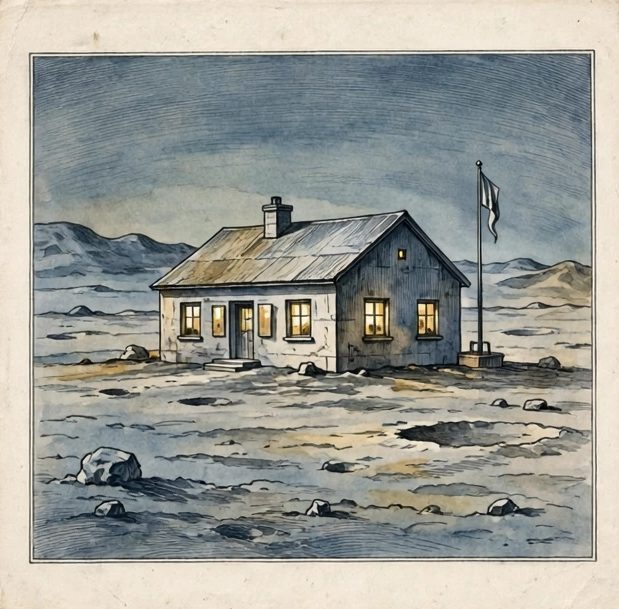
The Holding, as filed: an institution complete in its paperwork, and in no hurry to be anything else.
Hi-Tech Limited Holding is an institution that exists, for the present, entirely in its documents. It has divisions, departments, forms, seals, and a registry. It has no headquarters you could visit, unless you count the page you are reading, which the Holding does, and has filed accordingly.
It is a fictional institution, maintained with complete seriousness. That seriousness is the point. A made-up holding that cannot keep its own records straight would not be worth joining; this one keeps them very straight indeed, in numbered order, and expects its citizens to do the same.
The Holding asks very little of the world. It does not request recognition, territory, or belief. It asks only that its documents be read in the order they were issued, and kept, once received, in a safe and reasonably flat place.
02The Gravity Division
The Gravity Division issues the flagship, and files everything else under pending.
Within the Holding, the Gravity Division is responsible for one thing: the issuing of Lunar Building Permits. It does not manage the other departments, speculate about their timetables, or borrow their stationery. Its remit begins with a plot, a form, and a name, and it ends when all three have been properly recorded.
Gravity is the Division's flagship because it was ready first. Other work in the Holding is real, in the Department's sense of the word, but it is not yet issuable. The Division prefers a short list that can be honoured to a long list that must be explained.
For that reason the Division keeps its desk small and its records current. Every permit it grants can be accounted for by number, by plot, and by name, without reference to plans that have not yet been approved for issue.
03The Department of Lunar Construction
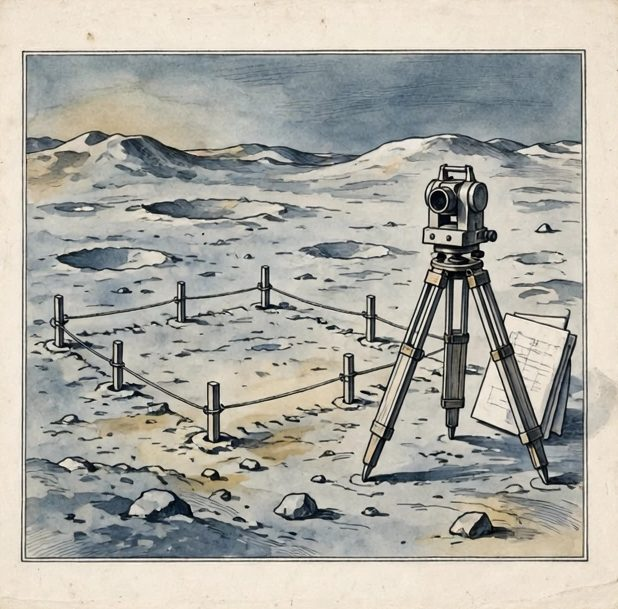
The Department builds nothing yet, on paper, thoroughly.
The Department of Lunar Construction is the office inside the Gravity Division that prepares permits for building on the Moon. To date it has built nothing. This is stated plainly in its own records, because a department that cannot admit its current output will not be trusted with its future one.
What it does instead is prepare. It surveys on paper, classifies structures on paper, and considers foundations, neighbours, and dust on paper, in advance and in detail. Construction, when it eventually leaves the page, will find the paperwork already waiting for it, which is the correct order of events.
Thoroughness, in this department, is measured in advance. Soundings are taken from published surveys, approaches are considered, and dust is discussed at length, because dust, on the Moon, is not a detail. It is a building material and a nuisance in equal measure.
04The Registry of Plots
The Registry is a book before it is anything else: names on the left, numbers on the right.
The Registry of Plots is the book in which the Department records every permit it grants. Each entry carries a number, a plot, and the name of the citizen to whom it was issued. An entry, once made, is not rewritten to look tidier. Corrections, if any, are noted in the margin and initialled.
The Registry is the reason a permit is more than a printed sheet. The sheet can be framed, kept in a drawer, or given away. The entry remains. If the sheet and the book ever disagreed, the Department would trust the book, and then investigate the sheet at some length.
The book itself is kept flat, bound plainly, and opened only for entries and for legitimate enquiries from its citizens. A registry that is handled constantly for display soon looks impressive and reads badly. This one is intended to be read in a hundred years.
05Why a Registry at All
A claim without a record is just a wish, and wishes are not filed.
A claim without a record is just a wish. Wishes are respectable things, and the Department has nothing against them, but they cannot be numbered, transferred, checked, or found again in twenty years. A registry entry can. That is the entire argument, and the Department considers it sufficient.
Registration also protects the citizen. Without a book, the same plot could be promised twice by enthusiasm alone. With a book, Plot 001 belongs in the record to one name only, and every later number follows in order. Scarcity, here, is not a sales device. It is a filing consequence.
There is also the matter of fairness. A record kept in order cannot quietly favour a later, louder claim over an earlier, quieter one. The book remembers what was filed first, and the Department follows the book, even when following it is less exciting.
06Paper First
Paper first, because paper can be checked before anything heavier is attempted.
The Holding works in documents before it works in anything else. This is deliberate. A document can be read closely, corrected cheaply, and agreed upon by people who are not in the same room, the same country, or, in this case, on the same world as the subject under discussion.
Paper also imposes a useful discipline. A form has fields, and fields have limits. You cannot write 'somewhere on the Moon' in a box marked Plot and expect the Registrar to accept it. Paper first means the thinking is finished before the artifact is printed, not discovered afterwards in the margin.
It follows that the Holding's artifacts are printed late in the process, not early. Drafts are ordinary. Finals are not. By the time a permit reaches paper stock worth sealing, its wording has already survived several readings by officials professionally disposed to find fault.
07The Registrar
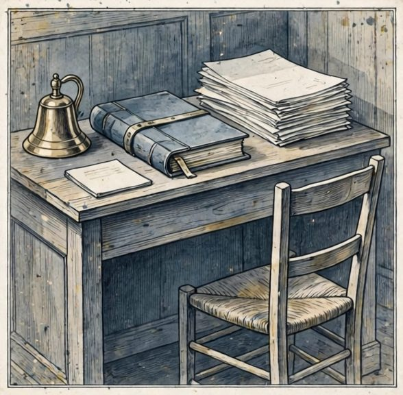
The Registrar is never seen, always implied, and in no recorded instance hurried.
Every registry implies a registrar. Ours is the patient official behind the desk: never seen, never photographed, and never described beyond what the work requires. The Registrar reads each claim, assigns the next number in order, and replies with the necessary details in due course.
Patience, in this office, is a professional qualification. Numbers are not skipped because a request was charming, nor delayed because one was not. The Registrar is patient with citizens and strict with sequence, which the Department regards as the correct distribution of those two qualities.
Citizens writing to the desk should not mistake this patience for absence. Every claim is read, every number is assigned by hand, and every reply is sent in sequence. The Registrar simply refuses to let urgency, real or performed, rearrange the order of the book.
08Established on Paper
Established on paper in MMXXVI: the date is exact, and so is the admission.
The Holding dates itself MMXXVI and describes itself, on its own seal, as EST. ON PAPER. Most institutions would put the second phrase in smaller type, or leave it out altogether. The Holding puts it on the seal, in the round, where it cannot be missed by anyone who looks at the document closely.
This is not self-deprecation. It is accuracy, practised as a house style. An institution founded on paper should say so on the very object that certifies it. The seal therefore tells two truths at once: when the Holding began, and what, at present, it is honestly made of.
MMXXVI is therefore not a costume date, chosen to make a new institution sound old. It is the actual year of founding, recorded in Roman numerals because the seal looked better for it, and because accuracy and appearance are not, in this office, enemies.
09A Fictional Institution, Kept Seriously
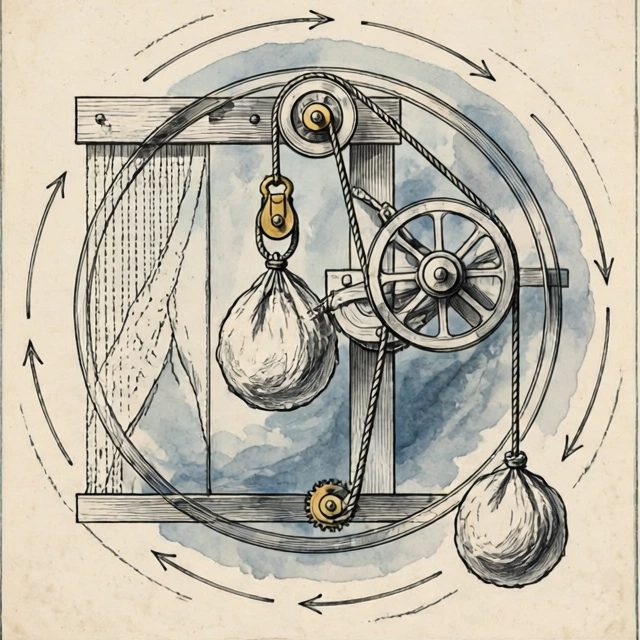
Stated early and calmly, so that no citizen need wonder later what was actually granted.
The permit is a work of speculative fiction and collectible print. It grants no real property, no jurisdiction, and no rights on the Moon. The Department states this early, in plain language, and not in small print, because a joke that depends on being misunderstood is not a joke the Holding wishes to file.
The Moon belongs to everyone, which is precisely why the paperwork matters. What a citizen receives is an artifact, a number, a name in a registry, and membership of an institution that treats those things with complete seriousness. That is the whole offer. The Department believes it is enough, and has priced and printed it accordingly.
None of this diminishes the artifact. A printed permit, honestly described, can still be numbered, sealed, registered, and kept for decades. The Department's position is simple: the pleasure of the thing survives the truth about the thing, provided the truth was never hidden.
10The Flagship
Gravity reports for duty first; the other departments will follow in their own filed order.
Gravity is the flagship of the Holding: the first artifact issued, the first form completed, and the first entry in the Registry of Plots. A flagship is not necessarily the largest vessel in a fleet. It is the one that goes first, carries the standard, and shows the others how the paperwork is done.
Other departments exist in the Holding's plans and will be introduced in their turn: The Lunar Line, Selene Industrial at Shackleton Crater, the Lunar Mall, kept in the archive with honours, and LEAF, the green department. For now they are foreshadow only. Gravity is the one open for claims.
A flagship also carries a responsibility the later departments will inherit: proof that the system works. If Gravity's numbers run cleanly from 001 to 100, its registry holds, and its citizens are satisfied, the Holding has a working model to file the rest against.
11The Permit
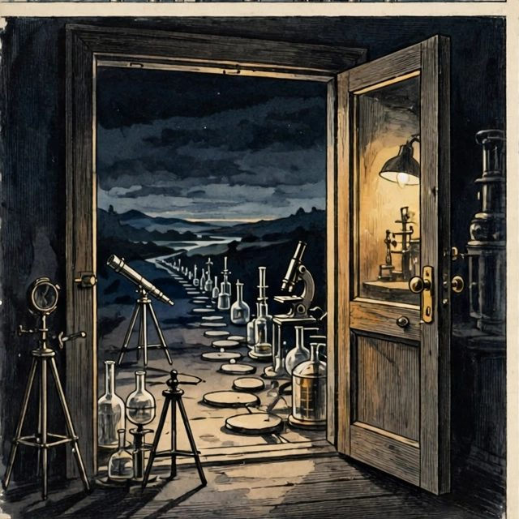
The Permit: permission to imagine, in writing, numbered by hand and sealed in gold.
The Permit is the first of the three paper artifacts in the pack, and the document around which the others are arranged. Its subtitle, printed without apology, is 'Permission to imagine, in writing.' The Department considers imagination an activity that benefits from authorisation, a reference number, and a place to sign.
Each permit is numbered by hand, sealed in gold, and issued in the citizen's name, which is then entered in the Registry of Plots. It is not personalised decoration added to a standard sheet. The number, the name, and the entry are the document. Without them, it would be merely a very formal piece of paper.
The other two artifacts in the pack support it: the Plot Map shows where the permission applies, and the Citizen Card shows to whom the Holding belongs. The Permit remains the senior document. If only one sheet is framed, the Department recommends this one.
12Form HLH-G-001
One form, one purpose: HLH for the Holding, G for Gravity, 001 because it was first.
The permit is issued on Form HLH-G-001. The Department is fond of form numbers, and makes no attempt to hide it. A number of this kind tells a trained reader three things at once: which institution issued the document, which division is responsible for it, and where it stands in that division's sequence.
There is one form because there is one purpose. The Department does not issue a general permission to be adapted later to any plot, structure, or citizen. Form HLH-G-001 covers this permit, this plot, and this class of structure. Anything else, in due course, will receive a form number of its own.
Citizens completing correspondence with the desk are asked to quote the form number where relevant. It saves the Registrar a morning of cross-referencing, and it gives the citizen the quiet satisfaction of addressing an institution in its own preferred language: exactly, and by number.
13No. 001 of 100
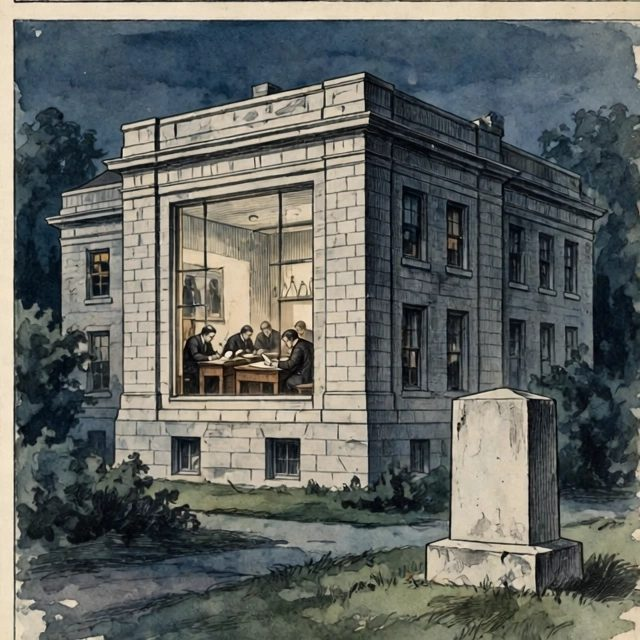
Permit No. 001 is not a prototype; it is the first page of someone's collection.
The first drop consists of 100 packs, numbered in order of claim. Permit No. 001 is therefore not a sample, a prototype, or a departmental copy retained for display. It will be issued, to the first citizen who claims it, with the same form, seal, and registry entry as No. 100.
First numbers carry a particular weight in any collection. They mark where the sequence began, before the institution had a history to point to. When the hundred are gone, Module No. 2 follows, and No. 001 becomes what the Department already calls it in its notes: the first page of someone's collection.
The Department does not reserve early numbers for itself, for patrons, or for anyone who writes a particularly persuasive claim. Order of claim is the whole rule, published in advance and applied without exception. No. 001 will go to whoever files first. That is its distinction.
14Granted, Provisionally, Forever
The status line reads 'Granted, provisionally, forever' — all three words are meant.
The status of the permit, as printed, is 'Granted, provisionally, forever.' Citizens occasionally ask which word governs the other two. The Department's answer is that each governs a different thing. Granted describes the decision. Provisionally describes the honesty. Forever describes the intention.
A lesser institution would choose one word and delete the others for neatness. The Holding keeps all three, because all three are true at the same time. The permit is granted now, it is provisional because everything on paper is, and it is intended to stand without expiry for as long as the Registry itself is kept.
The Department has been asked whether the line is a joke. It is printed on the permit, which is a serious place, in the status field, which is a serious field. If citizens find it amusing, the Registrar accepts this without comment and files the enquiry.
15Issued To — The Blank Line
The blank line is the most important field on the form, precisely because it is empty.
Near the top of the form is a line marked Issued To. In the Department's master copy, and in every photograph of the artifact taken before a claim, that line is blank. It is not an omission. It is the field the entire document exists to complete.
A name entered there changes the permit from an edition into a record. The same name is then written into the Registry of Plots against the same number, so that document and book agree. Until a citizen claims a pack, the line stays empty, patiently, in the manner of the office that printed it.
Citizens are therefore asked, when claiming, to give their name exactly as it should appear. The Registrar enters what is provided, in the hand the Registry uses for all its entries. A name, in this book, is not corrected, abbreviated, or improved upon by the office.
16The Plot, As Filed
As filed: Mare Tranquillitatis, Sector G, Plot 001 — no plot is described more loosely than this.
The Plot field of the form reads: Mare Tranquillitatis, Sector G, Plot 001. The Sea of Tranquility was chosen for reasons the Department considers obvious: it is the best-known plain on the Moon, the most thoroughly imagined, and, by lunar standards, exceptionally level.
Sector G is the Gravity Division's own sector within it, divided for registry purposes into numbered plots. Plot 001 is the first of them. Later permits in the drop take the numbers that follow, in order, each attached to its own plot in the same sector, so that citizens of the first hundred are, on paper, neighbours.
The map in the pack shows the same field drawn rather than written: your plot, marked, and your neighbours, theoretical. The agreement between document and map is checked before sealing. A permit whose plot moved between the two would be withdrawn, reprinted, and apologised for.
17The Coordinates, As Filed
Coordinates 0.67 degrees north, 23.47 degrees east: the quiet part, as the Department describes it.
The Coordinates field reads 0.67° N, 23.47° E. The Department's gloss, entered in the same hand wherever the coordinates are recorded, is 'the quiet part.' Citizens familiar with the Sea of Tranquility may recognise the neighbourhood. The Department does not make a claim of it; it simply notes that distinguished neighbours are still neighbours.
Precision matters here even though no surveyor has paced the plot. Coordinates written carelessly would place a citizen's module in the wrong sea entirely. These were checked twice, against the best maps the office keeps, and are printed identically on the permit and on the Plot Map that accompanies it.
The Department adds, for the record, that quiet is a relative term on a plain visited so rarely. Plot 001's position was chosen to be findable on any good chart of the sea, neither hidden in shadow nor placed anywhere that would require explanation at a family gathering.
18Structure Class, As Filed
Habitat Module, Class C: one module, up to three citizens, and no extensions without forms.
The Structure Class field reads: Habitat Module, Class C. This is the class of structure the permit authorises its citizen to imagine on Plot 001. Class C is a modest class, deliberately. The Department begins its registry with a module that a small household could plausibly draw, describe, and defend at the Registrar's desk.
The specification is one module, up to three citizens. Not a city, not a dome, not a skyline. One well-considered module, occupied by no more than three people, whose names the Department does not require but whose existence it is pleased to accommodate in the paperwork.
Drawings of the proposed module are welcomed by the desk, though none is required for the permit to stand. Condition three of the Conditions of Construction asks only that the structure be visible from Earth at least in principle. A good drawing, the Department notes, counts.
19Validity — The Patient Registrar
Valid until recalled by the Registrar — and the Registrar, citizens are reminded, is patient.
The Validity field reads: 'Until recalled by the Registrar. The Registrar is patient.' There is no expiry date, no renewal window, and no annual fee for remaining in force. A permit that lapsed after twelve months would make the Registry a subscription ledger, which it is not and does not intend to become.
The recall clause is not a threat. It is the Department reserving, in correct form, the theoretical right to correct its own record if an entry were ever made in error. In practice the Registrar recalls nothing, hurries nothing, and regards a permit granted as a matter settled. Forever, provisionally, stands.
Citizens sometimes keep the validity line in mind longer than any other field on the form. The Department understands this. Most permissions in modern life expire loudly and often. This one was designed to sit quietly in a drawer, in force, requiring nothing further from anyone.
20The Gold Seal
Gold, circular, and final: the last thing applied to the permit, and the first thing checked.
The permit is finished with a gold seal. It is circular, as seals in this office are, lettered around its rim 'HI-TECH LIMITED · GRAVITY · MMXXVI', with a crescent moon at its centre and the words 'EST. ON PAPER' set beneath it. It is applied last, after the number, after the name, after the entry has been made.
A seal does not add information. Everything it says is printed elsewhere on the form in ordinary type. What it adds is conclusion. A document with a seal has been through the whole process and come out the other side approved. Citizens tend to touch it first. The Department understands, and uses a gold that rewards it.
Checked against the master die before each use, the seal is either perfect or the sheet is reprinted. There is no third state. The Registrar permits no almost-sealed permits, and the Registry contains none.
21The Seal's Inscription
The seal is applied last, in gold, after every other field on the Permit has been completed.
The seal is circular, as seals in this Department have always been circular. Around its edge, in clear capitals, it is lettered HI-TECH LIMITED · GRAVITY · MMXXVI. At its centre is a crescent moon, unadorned. Beneath the crescent, in smaller letters, it reads EST. ON PAPER.
Each element is there for a reason. The Holding is named because it issues the document. Gravity is named because it is the Division concerned. The year is given in Roman numerals because the Department prefers them for permanent things. The final line is the most accurate. The Holding was established on paper, the Permit is issued on paper, and the seal, honestly applied, says so. It is read once at issue, to check the lettering, and thereafter it is simply present, as a seal should be.
22Numbered by Hand
Permit No. 001 of 100 is written, not printed, and no two numbers in the first drop are written by machine.
The number could have been printed. A stamp would have been quicker, and a machine would have made no mistakes. The Department considered all three and chose a hand.
A hand writes one number at a time, for one citizen at a time. When the Registrar writes 001, there is no 002 yet in any meaningful sense. There is only this pack, this name to be entered in the Registry of Plots, and this number, formed carefully so that it can be read in a hundred years. The slight unevenness of the figures is not a flaw in the process. It is the process, recorded. The ink is allowed to dry fully before the Permit is folded, because a smudged number would have to be explained in the Registry.
23The Signature Line
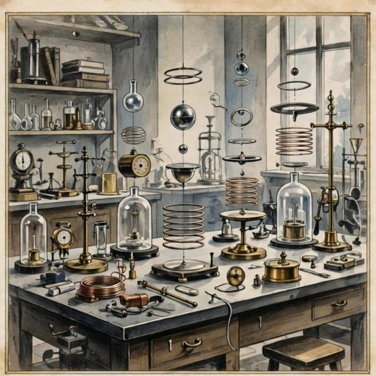
Below the conditions, a single ruled line waits for the Chief Registrar, and the Permit is not granted until it is used.
Near the foot of the Permit there is a ruled line, neither long nor short. Above it, nothing. Below it, in small type, the words Chief Registrar. The line itself carries the authority of the document.
This is deliberate. Institutions tend to accumulate signatures, initials, and stamps until no one can tell which mark actually granted anything. The Department keeps one line. When the Chief Registrar signs, the provisional becomes granted, provisionally, forever — which is the status printed on Form HLH-G-001. Until that moment the paper is a form. After it, the paper is a permit. The difference is one line, filled. No other mark on the form, however official it may look, has ever granted anything in this Division.
24The Date of Issue
The date entered on the Permit is the date the Department issues it, not the date it was ordered, printed, or posted.
Every Permit bears a date of issue, entered by the Department on the day of issue. It is not the date of purchase, and it is not chosen by the citizen. The Department chooses it, as departments choose dates, by the simple method of letting the day arrive and then recording it.
This makes issue an event rather than a transaction. On that date, a name was entered in the Registry of Plots against Plot 001, Mare Tranquillitatis, Sector G. Before that date, the plot was unclaimed. After it, the plot has a citizen. The date marks the change, and the Permit keeps the mark permanently, in ink, where dates belong. The Registry entry carries the same date, so that Permit and record can always be checked against each other.
25Permission to Imagine, in Writing
The subtitle of the Permit is Permission to imagine, in writing, and the Department means all three parts of it.
Most imagination is undocumented. It occurs, it is enjoyed, and it leaves no record. The Department has no objection to this, but it is not the Department's line of work. Its line of work is the subtitle printed beneath the title of the Permit: Permission to imagine, in writing.
Permission, because the citizen is formally granted it, by an institution, on a numbered form. Imagine, because that is the activity authorised — no more, and the Department is careful to say no more. In writing, because the permission itself exists as writing, and because what is imagined under it tends, in the Department's experience, to be written down in turn. Imagination, documented, is the whole product. The Department keeps a copy of every such permission it grants, filed by number, so that imagination once documented stays documented.
26Mare Tranquillitatis
The Sea of Tranquility is not a sea, has never held water in living memory of the Moon, and remains the plot's address.
Mare Tranquillitatis is Latin for the Sea of Tranquility. Early observers, seeing a smooth dark plain through small telescopes, took it for water and named it as they found it. The name has been kept, as good names are, long after the error was understood.
The plain is basalt — cooled lava, levelled by its own weight, dry for some three billion years. It is one of the calmest-looking surfaces on the Moon, which the Department considers a suitable character for a first plot. The citizen's address therefore begins with a sea that is not a sea. The Registry records this without embarrassment. A name is a name once it has been used on enough maps. The Department chose it for the first issue in part for that calm, and has seen no reason since to move the plot elsewhere.
27Sector G
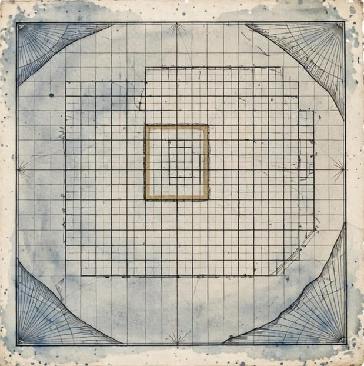
The Sea of Tranquility is divided by the Department into sectors, and Plot 001 stands in Sector G.
A sea, even a dry one, is too large to administer whole. The Department therefore divides Mare Tranquillitatis into sectors: a plain grid, drawn over the map, each square lettered in order. The grid does not disturb the ground. It disturbs only the paperwork, which is what grids are for.
Sector G was selected for the first issue for sound registrar's reasons. It lies in the quiet part of the Sea, it contains the coordinates the Department had already chosen, and G — for Gravity, the Division issuing the permits — seemed an appropriate letter to begin with. Earlier sectors remain on file, unissued. The Department starts where it starts, and records that it did so. The remaining sectors will be opened in their turn, when Module No. 2 and its successors require them, and not before.
28Plot 001
Plot 001 is the first plot in Sector G, and the first entered in the Registry of Plots.
A plot, in the Department's usage, is a defined portion of a sector, small enough to be attended to and large enough to imagine a Habitat Module, Class C, standing on it — one module, up to three citizens. Plot 001 is the first such portion marked out in Sector G.
On paper, a plot is four boundaries, a number, and an entry in a registry. That is not a small thing. Before the marking, the ground was continuous and unconsidered. After it, one part of the Sea of Tranquility has a designation, a permit, and a citizen whose name is kept against it. The ground has not changed. Its standing in the records has changed completely. Subsequent plots will be numbered in order of claim, as the first drop proceeds, each with its own entry and its own map.
290.67° North
The latitude of Plot 001 is 0.67 degrees north, which is to say almost exactly on the Moon's equator.
The first coordinate in the Plot Map's field is 0.67° N. The figure is small because the plot lies close to the lunar equator — a short walk north of it, in lunar terms, which are not terms in which walks are currently undertaken.
Near the equator, sunlight arrives nearly overhead at noon and the pattern of light is as regular as the Moon allows. There are no seasons to speak of, no tilt worth planning around. For a Habitat Module, Class C, this simplicity is recorded as an advantage. The Department notes the latitude plainly, without celebration. A coordinate does not need to be dramatic to be exactly where the plot is. The Registry records latitude first, by convention, and the citizen reading the map learns where the plot stands north to south before anything else.
3023.47° East
The longitude of Plot 001 is 23.47 degrees east, on the side of the Moon that always faces Earth.
The second coordinate is 23.47° E. Lunar longitude is measured from the centre of the side of the Moon turned towards Earth, and Plot 001 sits east of that centre, well within the familiar face — the side that has been looked at, named, and mapped for centuries.
One consequence follows, and the Department records it in the plot's favour. From this longitude, Earth does not cross the sky. It hangs in roughly the same place, always, turning slowly in position. A citizen standing on the plot, in principle, would know where to look for home without consulting a chart. The chart, nevertheless, is provided in the pack. The Registry records longitude second, completing the pair of figures that, together, fix the plot to a single point on the Sea.
31The Quiet Part
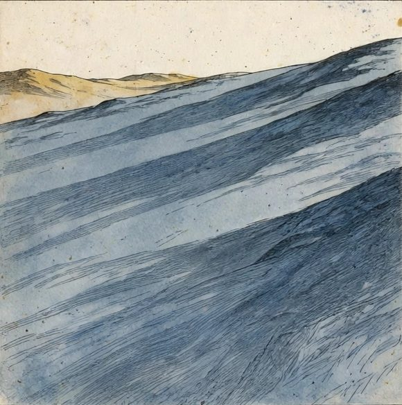
Against the coordinates on the Plot Map, the Department has written a gloss: the quiet part.
Most fields on the Plot Map are filled with figures. Against the coordinates, however, the Department permits itself four words of description: the quiet part. It is the only gloss of its kind in the pack, and it has survived every revision of Form HLH-G-001.
Quiet, here, is a specification rather than a mood. The plot does not lie on a route, beside a landmark facility, or under any known traffic. Nothing is scheduled to happen there. In a registry, quiet means the entry can be expected to remain as written, undisturbed by amendments. The Department considers this the highest compliment it can pay a location, and pays it in small type. Visitors, when they eventually come in principle, are asked in the conditions to greet their neighbours and otherwise to preserve it.
32The Ground Itself
The surface of Plot 001 is regolith: grey dust and broken rock, sharp-edged, and older than any sea on Earth.
The ground at Plot 001 is regolith — a blanket of dust and fragments produced by impacts over billions of years. It is grey, it is soft to a depth of centimetres, and under the dust it firms quickly into something a foundation could respect.
The grains are sharp. On Earth, dust is rounded by wind and water; the Moon has had neither to smooth it, so each particle keeps its edges. The Department notes this under the conditions of construction in spirit if not in letter: structures, ambitions, and paperwork must be planned accordingly. It also notes, with approval, that dust belongs to whoever it settles on. Sweep responsibly. At the plot it lies undisturbed, except where the famous neighbour's visit in 1969 pressed a few footprints into it that have not yet faded.
33The Long Day
A single lunar day at Plot 001 lasts about a fortnight, and the night that follows it lasts about as long again.
The Moon turns slowly. From sunrise to the next sunrise at Plot 001 is roughly a month on Earth, which means about a fortnight of continuous daylight, followed by about a fortnight of continuous night. Noon is not a moment but a long condition, and so is midnight.
At noon the sun stands high over the Sea of Tranquility and the plain is lit without shadow or mercy. At midnight the ground cools far below any earthly winter and the sky remains exactly as crowded with stars as it was at midday. The Department makes no recommendation between the two. It records the schedule so that plans for a Habitat Module, Class C, can be made with the timetable in view.
34The View of Earth
From Plot 001, Earth neither rises nor sets; it stays in one part of the sky and turns where it hangs.
Because the Moon keeps the same face towards Earth, Earth keeps the same place in the Moon's sky. From Plot 001 it does not rise in the morning or set in the evening. It stays, at a fixed bearing, while its phases change and its weather turns beneath it.
Over the long lunar day, a citizen could watch Earth pass from full to new and back again without it moving from its station. Continents would rotate through the light once each earthly day. The Department lists this among the plot's features without emphasis. A view that never leaves is difficult to advertise honestly, and the Holding does not advertise. It registers. It is, the Department notes, the only view of its kind offered in the pack, and it is included at no additional charge, the price remaining twenty dollars.
35The Neighbours, Theoretical
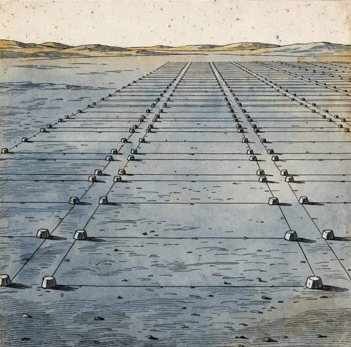
The other plots of Sector G are at present unclaimed, and their citizens, accordingly, are theoretical.
The Plot Map carries a line the Department is fond of: Your plot, marked. Your neighbours, theoretical. Sector G contains further plots, laid out on the same grid as Plot 001, and none of them has yet been claimed under this issue.
Theoretical neighbours have advantages that should be acknowledged. They make no noise during the long lunar night. They raise no boundary disputes. They are, by definition, polite. Against this, the fifth Condition of Construction already provides for their eventual arrival: neighbours are to be greeted on arrival, regardless of how long they have been neighbours. The Department plans for the future population of Sector G with the same seriousness as for its present one, which is none, on paper.
36The Famous Neighbour
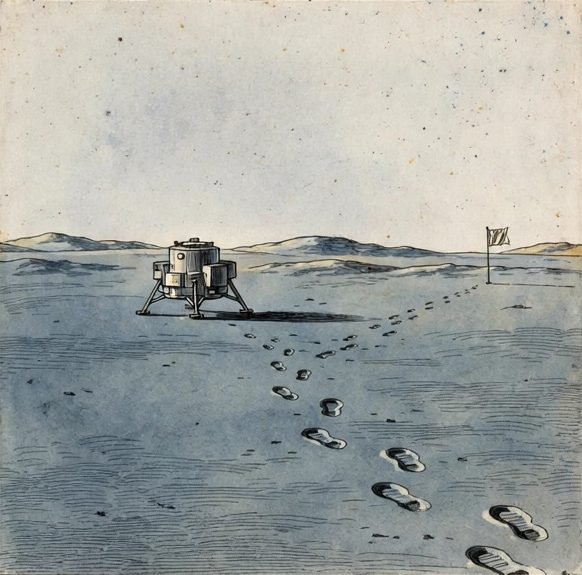
At the very coordinates of Plot 001, Apollo 11 landed in July 1969, and the descent stage of the Eagle still stands there.
Plot 001 has one neighbour who is not theoretical. In July 1969, Apollo 11 landed at 0.67° N, 23.47° E — these coordinates, in this Sea — and Tranquility Base was established for a little over twenty-one hours. The visitors then left, thoughtfully, by the upper half of their vehicle.
The lower half remains. The descent stage of the Eagle still stands on the plot's ground, the most distinguished piece of equipment ever left in Sector G. The Department does not claim it, move it, or include it in the price, which remains twenty dollars for the pack of three paper artifacts. It simply notes, ahead of the fifth condition, that when neighbours have been present since 1969, greeting protocols apply with particular respect.
37Surveyed Without Visiting
Plot 001 was surveyed by the Department from maps, photographs, and confidence, in that order of reliability.
No surveyor from the Department has visited Plot 001. The Department wishes to be clear about this, because the Plot Map looks like the work of people who have been. It is, instead, the work of people who have read.
The survey method is recorded on file as maps, photographs, and confidence. The maps are the accumulated cartography of the Sea of Tranquility. The photographs include orbital surveys and the surface record left by Apollo 11 at these very coordinates — a ground truth, as it were, supplied by the famous neighbour. Confidence supplies the remainder. The Department finds the method sufficient for a plot whose boundaries, for the present, exist because they were drawn. A survey that admits its method, the Department holds, is worth more than one that pretends to boots on ground it has never touched.
38Scale: 1 : Imagination
The Plot Map declares its scale plainly below the title: Scale: 1 : Imagination.
Every honest map states its scale. The Plot Map states its own below the title, where a scale belongs: Scale: 1 : Imagination. The Department prints it in the same type as the coordinates, because it is information of the same kind.
The meaning is straightforward. One unit on the map corresponds to one unit of imagination applied by the citizen. A plot that measures a hand's span on paper measures, under this scale, exactly as large as it is imagined to be — provided the imagination is applied within Sector G and in accordance with the conditions. Other maps in the atlas use ratios. This one uses the citizen. The Department considers the scale accurate, reproducible, and unlikely to be superseded.
39Boundaries, in Principle
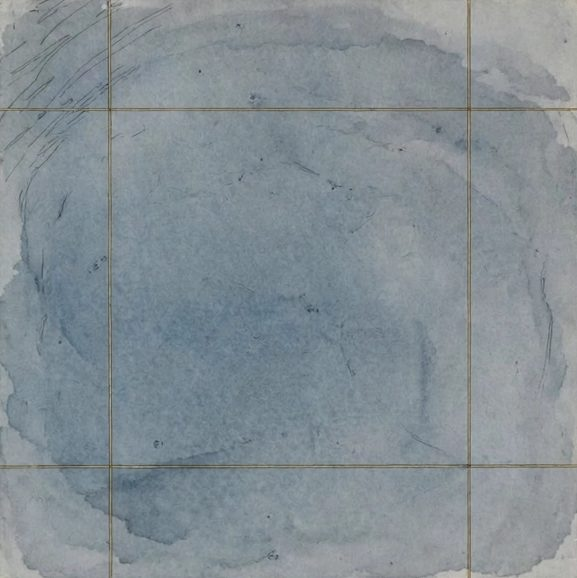
Plot 001 ends where its lines end, and its lines exist because the Department drew them and keeps the drawing.
Where does Plot 001 end? At its boundaries — four lines, drawn on the Plot Map, enclosing a portion of Sector G. On the ground itself there is no fence, no marker, and no change in the regolith at the line. The dust on one side is identical to the dust on the other, and has been for some billions of years.
The third Condition of Construction uses a phrase the Department relies on here: at least in principle. The structure must be visible from Earth at least in principle; the boundaries exist at least in principle. In principle turns out to be a load-bearing location. A line that exists because it was drawn, registered, and kept is, for all purposes of this Holding, a line. The Registry keeps it drawn.
40A Plot Is a Promise of Attention
This hall closes with the Department's working definition: a plot is one small place, attended to, forever.
The Holding administers an entire Sea, on paper, and could be forgiven for attending to none of it particularly. A plot is the opposite arrangement. To mark Plot 001, number its Permit by hand, and enter a citizen's name against it in the Registry of Plots is to promise that this one small place will be attended to.
Forever, in the Permit's status — Granted, provisionally, forever — is the term of that attention. The Registrar is patient, as the validity line observes, and patience is what attention looks like over long periods. The citizen receives three paper artifacts for twenty dollars, and no real property, no jurisdiction, and no rights on the Moon. What the citizen also receives is a place that the records will not forget. The Department considers the exchange fair, and closes the hall.
41The Pack, Whole
The complete issue, laid out in order: three sheets, no more, no less.
The pack contains three sheets of paper. That is the entire product, and it is enough. There is no box within the box, no code to redeem, and no further item promised at a later date under a separate cover.
First comes the Permit, numbered by hand and sealed in gold. Second comes the Plot Map, showing Mare Tranquillitatis, Sector G, with one plot marked. Third comes the Citizen Card, recording that the holder is a citizen of Hi-Tech Limited Holding.
Together they do one job properly. One sheet grants, one sheet locates, and one sheet belongs. The Department issues nothing else in this module, and asks the holder to want nothing else from it. The Registry files it under Module No. 1, without addition or apology.
42Artifact 01 — The Permit Itself
Form HLH-G-001, as issued: the first sheet, and the reason for the other two.
The Permit is the first sheet in the pack and the heaviest in the hand. It is printed on good paper, the sort that keeps a crease where it is folded and resists being treated casually.
Its fields are few and final. At the head: Hi-Tech Limited Holding, Gravity Division, Department of Lunar Construction. Below: Permit No. 001 of 100, the Citizen's name, and the plot — Mare Tranquillitatis, Sector G, Plot 001, at 0.67 degrees N, 23.47 degrees E. At the foot: Form HLH-G-001, and the status, Granted, provisionally, forever.
A border runs around the whole sheet, engraved in the Holding's style. It does not decorate the document. It contains it, in the way a frame contains a statement the Department intends to stand by.
43The Hand Numbering
Each number entered by hand, in ink, at the Registry of Plots.
The number on the Permit is not printed. It is written, by a person, in ink, at the time the pack is prepared for its citizen. Permit No. 001 was the first such entry. Yours will be the next in sequence.
A printed run would be quicker and perfectly uniform. The Department declined it. A hand-written number can hesitate, lean, or press a little harder on the final digit, and that irregularity is the record that a specific pack passed through specific hands.
The first drop is limited to 100 packs, numbered in order of claim. When the hundredth number has been written, the register for this module closes. The ink, by then, will have done all the counting required.
44Gold, in Print
The seal is gold foil on paper: ceremony, at the price of foil.
The seal on the Permit is gold. Not gold in the metallurgical sense — the Department files no assay — but gold in print: foil, laid onto paper under pressure, where it stays.
It is an old and honest arrangement. Seals were always more ceremony than security, a way for an institution to say, in a material that catches the light, that it means what the document says. Foil performs that duty at a modest price, which is why the pack can be issued for $20.
Hold the sheet at an angle and the seal answers first, before any of the printed words. That order of reading is intended. The eye is reassured; then the eye may read. The Department renews the foil, never the claim it seals.
45Artifact 02 — The Plot Map
The second sheet: Mare Tranquillitatis, Sector G, surveyed in the Holding's style.
The second sheet in the pack is the Plot Map. Where the Permit states, the Map shows. It covers Mare Tranquillitatis, Sector G, the quiet part of the Sea of Tranquillity, drawn at the scale printed plainly in its margin: 1 : Imagination.
One plot on the map is marked in gold: Plot 001, at 0.67 degrees N, 23.47 degrees E. The rest of the sector is surveyed with equal care, which is to say its craters are placed, its lines are ruled, and its remaining plots are left respectfully blank.
The Map carries its own summary in the margin: Your plot, marked. Your neighbours, theoretical. The Department considers that a complete description of the situation. It is issued folded once, to travel with the Permit.
46The Holding's Cartographic Style
Grids, dashed lines, and restraint: maps that admit what they are.
The Holding draws its maps in a settled style. A fine grid first, laid over the whole sheet. Then the ground itself — crater rims in thin line, level plains left empty — and only then the survey work, in dashed lines that show where measurement has been and where it has politely stopped.
Nothing on the map pretends to more certainty than it has. There are no colours competing for attention, no claims staked in bold type. The single indulgence is gold, reserved for the holder's plot and for nothing else.
A map that admits what it is can be trusted with what it shows. The Department regards that as the beginning of cartography, and also the end of it.
47Your Plot, Marked
One small gold rectangle in Sector G: a place, indicated.
On the Plot Map, among the grid lines and crater rims of Sector G, there is one small rectangle in gold. That is the plot. It does not occupy much of the sheet, and the Department sees no reason it should.
A marked plot is a different thing from an unmarked one, even when the marking is the only difference. Before, the sector was scenery. After, one part of it answers to a name in the Registry of Plots, and the rest of the map arranges itself around that fact.
The gold is modest on purpose. Grandeur would embarrass the scale of the claim, which is one plot, in the quiet part of Mare Tranquillitatis, held on paper by a citizen of the Holding.
48Reading the Map
How to read Sector G: craters first, then the ellipse, then the corner.
Begin with the craters. They are the fixed points of Sector G, drawn as fine double rings, and everything else on the sheet is placed in relation to them. Once the craters make sense, the plain between them reads as level, open, and quiet.
Next, find the dashed ellipse. It marks the surveyed boundary of the sector's settled portion — the part the Holding has measured, named, and entered in its books. Plot 001 sits inside it, marked in gold, at 0.67 degrees N, 23.47 degrees E.
Finally, read the corner. The coordinates, the scale of 1 : Imagination, and the margin note are printed there together. A map that is read to its corner has been read properly. Then fold it along its original crease and return it.
49Artifact 03 — The Citizen Card

The third sheet: small, formal, and meant to be kept on the person.
The third sheet in the pack is the Citizen Card. It is smaller than the Permit and smaller than the Map, and it is the only one of the three meant to leave the house. The Permit belongs on a wall or in a drawer of record. The Card belongs with its citizen.
It certifies, in the Holding's formal wording, that the named holder is a citizen of Hi-Tech Limited Holding. It carries the holder's name and its place in the Registry of Plots, and it asks nothing further of anyone who is shown it.
Three sheets, three duties. The Permit grants the plot. The Map shows where it lies. The Card says who holds it — which, in the Department's order of things, is the part worth carrying.
50What the Card Certifies
Citizenship in the Holding: a status conferred by paper, kept by the Registry.
The Card certifies citizenship in Hi-Tech Limited Holding. This is a status conferred by paper, and the Department is straightforward about the mechanism: a name is entered in the Registry of Plots, a card is issued against that entry, and the holder is a citizen.
No examination is set and no oath is administered. The Holding is a limited company issuing a work of speculative fiction and collectible print, and its citizenship carries exactly the weight that such an institution can honestly confer — belonging, recorded properly.
That turns out to be a durable kind of weight. The Registry keeps the entry whether or not the Card is at hand, and the Card remains valid because the book behind it is kept in good order.
51Offered to Citizens First
Perks accrue as the collection grows; citizens are served before the general list.
Citizenship carries one standing privilege, stated on the Card itself: every new module issued by the Department is offered to citizens first. When Module No. 2 follows the first drop, the offer goes to the Registry before it goes anywhere else.
Beyond that, perks accrue as the collection grows. The Department does not publish a schedule of them, because the collection itself will decide what is fitting: more plots, more paper, more entries in the book, each arriving first at the doors of those already recorded.
It is a modest arrangement and deliberately so. The Holding rewards the citizens it has rather than advertising for citizens it has not. The Registry, not the announcement, is where a module begins. Priority, in this Holding, is a matter of record.
52The Registry Entry Behind the Card
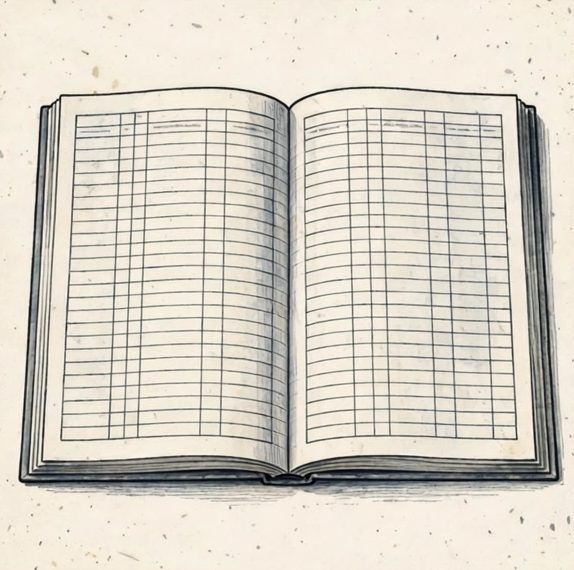
The card in the wallet; the name in the book. The book is the point.
Behind every Citizen Card there is an entry in the Registry of Plots: the citizen's name, the permit number, and the plot — Mare Tranquillitatis, Sector G, Plot 001, at 0.67 degrees N, 23.47 degrees E — written in the Holding's book of record.
The Card is the portable copy of that entry. It can be carried, shown, framed, or mislaid, and none of those fates touches the entry itself. If the Card were lost, the Registry would still know whose plot it is; that is what registries are for.
Institutions are mostly this, underneath the seals and the gold: a book, kept carefully, in which names are written once and not written out. The Department keeps its book accordingly.
53Paper Ages Well
Care of the artifacts: keep them dry, keep them flat, and they will keep.
Paper, looked after, outlives platforms. It requires no account, no password, and no migration to a newer format. The Permit, the Map, and the Card will be readable in fifty years by the simple method of being looked at.
The care required is brief. Keep the sheets dry. Keep them flat, or framed, rather than rolled. Keep them out of direct sun, which fades even gold in time, and away from any drawer where liquids are also kept — a common and avoidable tragedy in the Registry's experience.
Beyond that, nothing. Paper does not ask to be maintained monthly. It asks to be kept, and then it keeps its side of the arrangement for a very long while. Kept so, the sheets need no further attention from the Department.
54Framing and Keeping
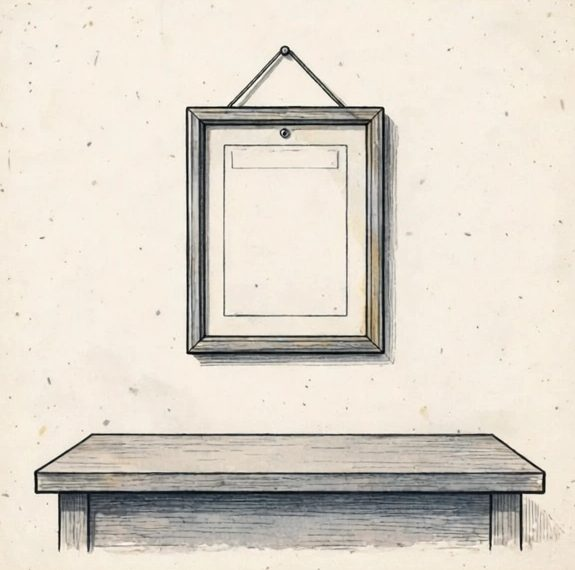
The permit, framed: a document that improves a room's seriousness.
The Department recommends framing the Permit. This is not vanity. A framed document is a protected document — behind glass, off the desk, safe from coffee and from being used, in an emergency, as a backing sheet for somebody else's notes.
There is a secondary effect, which holders report consistently: a room with a lunar building permit on its wall conducts its business at a slightly higher level of seriousness. Visitors read the border, the seal, and the status — Granted, provisionally, forever — and adjust their expectations upward.
The Map frames well beside it, the gold rectangle visible across the room. The Card, being carried, will have to hear about the wall second-hand. Hung level, it will outlast several rearrangements of the furniture below it.
55The First Page of a Collection
Page one of a collection: the pack now, the modules to come.
Consider the pack as the first page of a collection. When the first drop of 100 packs is gone, Module No. 2 follows, and Permit No. 001 becomes what it was always designed to be: page one of somebody's set, complete only when shelved with what comes after it.
Collections are for continuity. A single document is a curiosity; a sequence of them, numbered and registered to the same citizen, is an archive — the record of a small institution and one person's standing in it, growing at the pace the Department issues.
That is why the numbering is by hand and the order is by claim. A collection remembers how it began. This pack is how yours begins. The Registry records the beginning in the same hand as the number.
56The First Condition, Stated
Condition One, as printed on the Permit, in full.
Every permit issued by the Department is subject to the five Conditions of Construction, printed on the Permit itself. The First Condition reads: Gravity at the site is limited (1.62 m/s²). Structures, ambitions, and paperwork must be planned accordingly.
It is the Department's physics, stated once and applied everywhere. The figure is not negotiable, not averaged, and not subject to appeal on grounds of enthusiasm. The Moon at Mare Tranquillitatis offers 1.62 metres per second squared, and the Holding's paperwork begins from there.
Citizens are asked to read the condition before planning anything. It is placed first among the five because everything built under this permit is built under it. The remaining four conditions follow it on the same sheet, in the same type.
57Planned Accordingly
On planning accordingly: the three named items, each sized to the gravity provided.
The First Condition names three things that must be planned accordingly: structures, ambitions, and paperwork. The Department lists them in that order and treats all three as engineering matters.
Structures first, plainly: what stands at 1.62 m/s² stands differently, and foundations, loads, and landings must be reckoned for the gravity actually supplied. Ambitions next, and just as practically: a plan sized for Earth will arrive on the Moon over-built in some places and under-thought in others.
Paperwork last, but not lightly. Forms filed for the site must describe the site as it is — one plot, in the quiet part of the Sea of Tranquillity, under limited gravity — and not as a more dramatic place the applicant might prefer.
58Ambitions, Accordingly
The gentle instruction of Condition One: dream at one-sixth scale, file at full scale.
There is a gentleness in the First Condition that the Department intends. It does not forbid ambition. It asks ambition to be planned accordingly, which is a request about arithmetic, not about hope.
At one-sixth of Earth's gravity, things carry further and settle slower. A structure leaps more easily; so does an assumption. The citizen who dreams at one-sixth scale — modest spans, patient foundations, expectations adjusted to the ground — will find the site cooperative. The citizen who dreams at full terrestrial scale will be filing corrections.
The paperwork, by contrast, is filed at full scale, every field complete. Dream as the gravity allows. File as the Registry requires. The condition holds both halves together. The Department has found no citizen worse off for observing it.
59The Second Condition, Stated
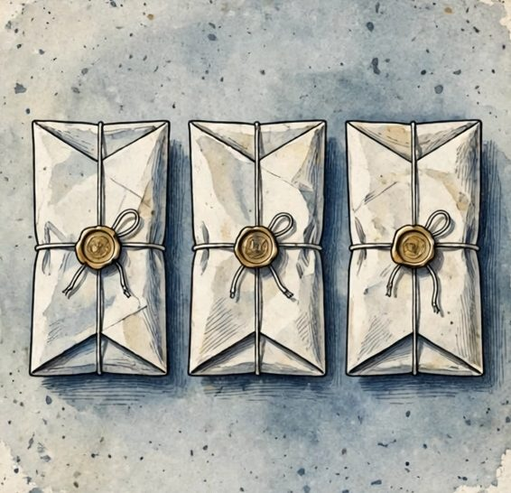
Condition Two, as printed on the Permit, in full: three limited things in a row.
The Second Condition of Construction reads: The Holding is limited. This permit is limited. Liability, accordingly, is limited. It is printed on the Permit directly beneath the First, and it is the shortest argument the Department makes.
Three limited things are set in a row. The Holding is limited — it says so in its nature and its name, Hi-Tech Limited Holding. The permit is limited — one plot, one citizen, the conditions stated, nothing implied beyond them. Liability, accordingly, is limited, following from the first two as a conclusion follows from its premises.
The honesty line of the whole issue belongs with this condition in spirit: a work of speculative fiction and collectible print; the permit grants no real property, no jurisdiction, and no rights on the Moon.
60The Holding Is Limited
A limited company in every sense, and honest about it.
A limited company is usually limited in law and expansive in its brochures. The Holding prefers the arrangement the other way round: limited in law, limited in print, and expansive nowhere. The Second Condition is that preference, written as a rule of construction.
It protects everyone in the transaction, including the citizen. A permit that grants no real property, no jurisdiction, and no rights on the Moon cannot disappoint anyone who has read it — and the Department prints the limitation on the document itself, in the conditions, where reading happens before framing.
What remains, once the limitations are accepted, is the thing itself: three sheets of paper, a gold seal, a marked plot, a name in the Registry. Limited, and sufficient.
61Liability, Accordingly
The final clause of the second condition, entered without emphasis, as befits a limit honestly stated.
The second condition closes as plainly as it began: "The Holding is limited. This permit is limited. Liability, accordingly, is limited." The Department regards this as the most courteous sentence in the pack. It sizes the promise to the paper it is printed on, and it asks the citizen to do the same. Nothing here is larger than it claims to be, which cannot be said of every document issued on Earth.
Accordingly is the operative word. Liability follows the scale of the undertaking, neither inflated for effect nor shrunk in embarrassment. The Department promises paper and means paper: a permit numbered by hand, a map, a card, and a name entered in the Registry of Plots. If those arrive as described, the obligation is discharged in full. The Department knows of no fairer arrangement, and has filed this one accordingly.
62The Third Condition, Stated
Condition three, quoted in full, concerning visibility and the standing of a good drawing.
The third of the five Conditions of Construction reads, in full: "The structure must be visible from Earth at least in principle. A good drawing counts." It is entered here without abbreviation, because conditions, like neighbours, are to be met whole. The citizen is asked to build nothing that Earth could not, in principle, be shown. Secrecy is not a permitted building material.
The Department frames the condition as a courtesy. Earth has watched the Sea of Tranquillity for a very long time, mostly in silence. A structure raised there owes its home planet, at minimum, the possibility of being seen. The requirement is modest, the wording is exact, and the second sentence, as the next blocks will show, is where the Department's heart quietly resides.
63Visible, in Principle
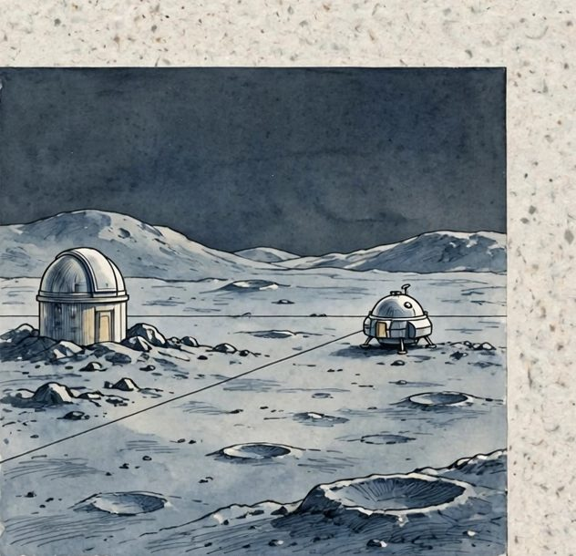
On the two words that carry the third condition, and carry it honestly.
"In principle" is doing honest work in the third condition, and the Department declines to apologise for it. A Class C habitat module is a small thing on a large Moon. No registrar will pretend it can be picked out from a garden in Surrey with the unaided eye, and no citizen is asked to build a tower merely to satisfy a telescope. The principle is the point: the line between Earth and structure must be unbroken.
What the condition forbids is not smallness but concealment. A module that could be seen, given a good telescope and better faith, stands in the open in every way that matters. It has coordinates: 0.67 degrees north, 23.47 degrees east, in Sector G of Mare Tranquillitatis. Anyone may look. That anyone, on most nights, will see only grey plain is a fact about distance, not about the structure's good standing.
64A Good Drawing Counts
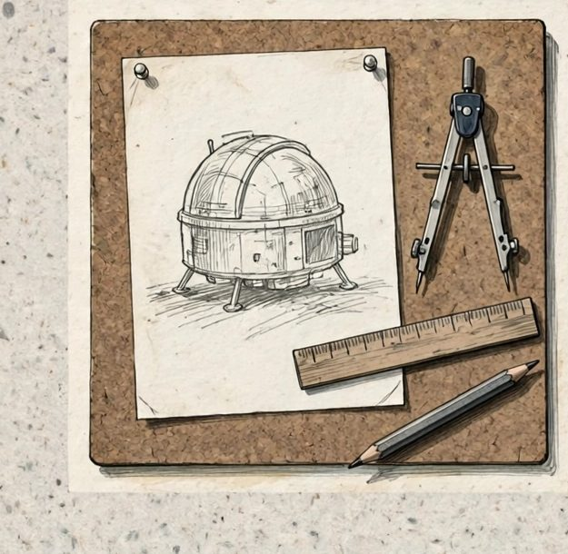
The Department's favourite clause, in which art is filed, without irony, as architecture.
The Department will state its preference plainly: "A good drawing counts" is its favourite clause in all five conditions. Under it, the drawing of the module is not an advertisement for the structure, nor a consolation for its absence. It is a legitimate form of the structure itself, admissible in the Registry, provided it is good. Good, here, means attentive: drawn as if someone might one day have to live inside the lines.
This is why the pack is made of print. The Plot Map, the permit, the plate on this page: each is a structure at the scale paper allows. Art filed as architecture is not a lesser filing. It is the only filing the Holding has ever offered, offered openly since Permit No. 001. A citizen who frames the drawing has, under condition three, raised the module and made it visible from Earth in the most practical sense available.
65The Fourth Condition, Stated
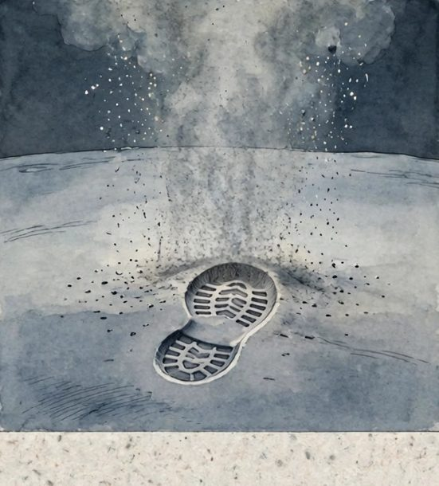
Condition four, quoted in full; the whole of lunar dust law, in two sentences.
The fourth of the five Conditions of Construction reads, in full: "Dust belongs to whoever it settles on. Sweep responsibly." The Department has considered whether dust law on the Moon requires further articles, schedules, or definitions, and has concluded, each time, that it does not. Two sentences have covered every case brought before the Registry, including the difficult ones.
The first sentence settles ownership. The second settles conduct. Between them there is no room for a dispute to grow, which is, in the Department's experience, exactly the right size for a law. Citizens are asked to learn condition four by heart. It is the shortest of the five, and the one most likely to be needed on an ordinary day, in ordinary light, with dust already descending.
66Dust Belongs to Whoever It Settles On
Ownership by contact, considered at leisure, as dust itself is never in a hurry to be resolved.
Lunar dust gets everywhere and onto everyone. It has no respect for seals, zips, ranks, or freshly issued permits. The fourth condition simply accepts this in advance and makes a law of it: ownership by contact. If the dust has settled on you, it is yours. The Department will not entertain claims that it was meant for someone else, nor petitions for its return to a previous owner who swept carelessly.
There is a quiet fairness in the arrangement. Dust does not consult the Registry before it settles, and so the Registry, wisely, does not pretend to assign it beforehand. What a citizen receives in this way is received completely, down to the last grey grain in the cuff of a glove. Possession, on the Moon, is not nine-tenths of the law. Under condition four, it is rather closer to the whole of it.
67Sweep Responsibly
The practical clause of the fourth condition, in which citizenship is shown to include housekeeping.
The second sentence of the fourth condition is the practical one: "Sweep responsibly." Since dust belongs to whoever it settles on, every act of sweeping is also an act of transfer. To brush one's steps clean without regard for a neighbour's roof, visor, or freshly greeted shoulder is to make a gift of one's dust at someone else's expense. The Department permits the sweeping. It regulates the shrug that sometimes follows it.
Citizenship, under this clause, includes housekeeping. No separate certificate is issued for it, and no inspector calls, but the standard is understood throughout Sector G: sweep slowly, sweep downwind of no one, and leave the ground around Plot 001 as fit for the next arrival as it was left for you. A tidy plot is not a decoration. In a place made largely of dust, tidiness is a form of good manners with a brush in its hand.
68The Fifth Condition, Stated
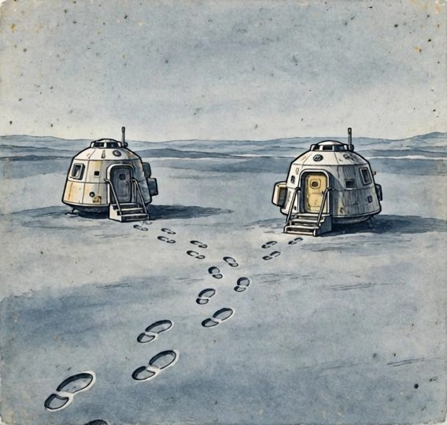
Condition five, quoted in full, in which manners are made a condition of construction.
The fifth of the five Conditions of Construction reads, in full: "Neighbours are to be greeted on arrival, regardless of how long they have been neighbours." The Department places manners last among the conditions, not because they matter least, but because they are what the other four are for. Gravity, limits, visibility, and dust all describe the site. This one describes the citizen arriving at it.
It is a condition of construction in the strict sense. A module raised by someone who will not greet the plot beside it is, in the Registry's view, unfinished, whatever its roof may claim. The greeting is not an ornament added after building. It is part of the building, load-bearing in its own quiet way, and the permit is not fully in order until it has been given.
69Greet the Neighbours
Arrival etiquette on an empty sea, where whoever is there is to be greeted, including history.
Plot 001 stands in Mare Tranquillitatis, Sector G, and the sea is, by any ordinary census, empty. The fifth condition is unmoved by this. On arrival, the citizen greets whoever is there. The Department's guidance is simple: begin with what is present, and do not wait for the neighbourhood to resemble a street. Emptiness, greeted properly, is merely a neighbour that has not yet answered.
History, in this sector, is present in person. Apollo 11's descent stage remains on the Sea of Tranquillity, where it was left, and the Department counts it as a neighbour: senior, silent, and entitled under condition five to a greeting like any other. The citizen who arrives at Plot 001 and nods, in whichever direction courtesy suggests, has complied fully. No reply is required for the condition to be met. Few regulations can promise so much compliance for so small an effort, and none, the Department believes, to better effect.
70Regardless of How Long
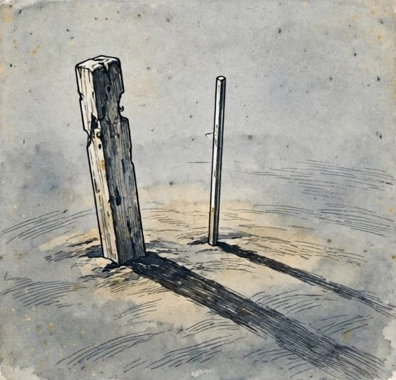
The closing clause of the fifth condition, in which seniority confers no exemption from being greeted.
The fifth condition ends with its firmest phrase: "regardless of how long they have been neighbours." The clause was written against a familiar temptation, known on Earth as well as anywhere: the belief that long residence earns a person the right to be left alone by newcomers, or that a new arrival is too junior to offer a greeting upward. The Department recognises neither doctrine. Seniority confers no exemption from being greeted.
Nor does it confer an obligation to greet first, which is the clause's gentler half. The newest citizen in Sector G and the oldest structure on the sea meet on level ground, which, the Department notes, the Sea of Tranquillity supplies in unusual abundance. However long anyone has been there, the greeting is due on arrival, every arrival. With this clause the five conditions close, and the pack turns, as the Registry always intended, from building to belonging.
71Who Is a Citizen
Citizenship in the Holding, defined in one sentence and kept to it.
A citizen of the Holding is the holder of a Citizen Card, entered in the Registry of Plots. That is the whole definition, and the Department has resisted every suggestion to lengthen it. No other qualification is recorded: no birthplace is asked, no profession weighed, no prior allegiance examined. The card is held, the name is entered, and the citizenship, such as paper can make it, is complete.
The third item of the pack is therefore not a souvenir of the other two. The Citizen Card is the instrument by which a buyer of a permit becomes a citizen of the issuer, and the perks of that standing, modest and genuine, accrue as the collection grows. The Department asks citizens to keep the card with the permit and the map. Together the three papers describe a place, a permission, and a person, in that order.
72Citizenship by Document
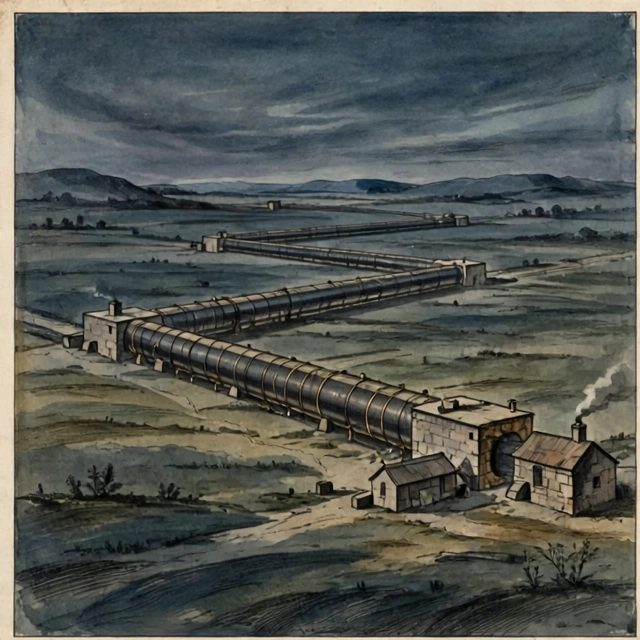
A status that begins with paper and a name in a book; no examination was set, and no anthem will be required.
Citizenship in the Holding begins with a document and a name in a book. There is no exam. There is no anthem. The Department has been asked, more than once, whether some test of lunar knowledge ought to precede entry in the Registry, and has answered, each time, that the willingness to be entered is the qualification. A person who claims a pack, at the one price of twenty dollars, has already demonstrated the only aptitude the Holding requires.
This is not carelessness about belonging. It is a considered order of events. First the document, then the duties, which are few, and the rights, which are honestly paper. Belonging administered this way has a virtue the Department values: it can be verified. Hold up the card. Find the name in the Registry of Plots, next to its number. If both agree, the matter is settled, and the citizen may proceed to the more interesting questions, such as the view.
73One Module, Up to Three Citizens
The Class C household, in which company is treated, correctly, as a structural feature.
The permit covers a Habitat Module, Class C: one module, up to three citizens. The Department draws attention to the phrasing. A permit is not issued to a crowd, nor restricted to a solitude. Three names may shelter under Plot 001, and the Registry will enter all three without requiring any of them to justify the company of the others. Companionship, within the stated limit, needs no separate form.
The Department regards company as a structural feature, not an amenity. A module occupied by three citizens is not the same building as the same module occupied by one, even if every panel is identical; it carries more conversation, more sweeping, and, under the fifth condition, a larger share of the greeting. Citizens choosing their fellow names are advised to choose as carefully as the Holding chose its conditions. The Registry records the choice by hand, and does not revise it lightly.
74What Citizens Receive First
First sight and first claim, being the Registry's standing order of notification.
Every new module is offered to citizens first. This is stated on the Citizen Card, and the Department treats it as a commitment, not a courtesy phrase. When a further module is prepared, the Registry is notified before the world: citizens receive first sight of it, and first claim on its numbers, ahead of any public announcement, listing, or rumour the Department cannot be expected to control.
The order matters more than the interval. Sometimes the advance notice will be long, sometimes brief, but it will never be reversed. The hundred names in the Registry of Plots are, for these purposes, the Holding's first public, and the Department writes to its first public first. Citizens are asked only to keep a reliable address with the Registry, so that being first remains a practical fact and not merely an agreeable principle.
75Module No. 2, Offered First
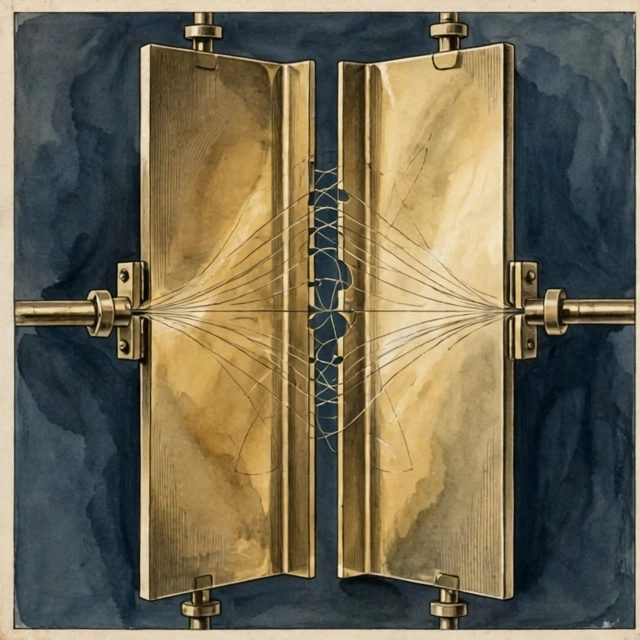
When the hundred are gone, the next module is heard of in the Registry before it is heard of anywhere else.
The first drop is one hundred packs, numbered in order of claim. When they are gone, Module No. 2 follows. That sequence is fixed, and so is the audience for its announcement: citizens hear of Module No. 2 before it is announced anywhere. The Registry of Plots will be the first room, so to speak, in which the news is spoken aloud, and its hundred names the first to be offered the new numbers.
The Department makes no promise about when this will occur, and citizens should distrust any version of this page that does. The hundred may go quickly or slowly; the Registry is content either way, since a line in the book does not fade while it waits. What is promised is only the order of hearing, and that promise is absolute. First is first. Module No. 2, whenever it comes, arrives for citizens before it arrives for anyone.
76The Registry as a Roll
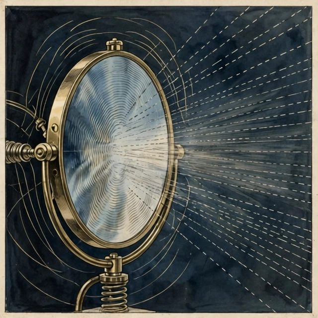
One hundred lines, each a person who said yes to a paper Moon, kept as a roll of honour.
The Registry of Plots is a book, and like most books kept by hand, it has become something more than its function. Read as a list, it records who holds which number. Read as a roll, it records something the Department values higher: one hundred lines, each a person who said yes to a paper Moon, knowing precisely what was and was not being offered, and said yes anyway.
There is no ranking within the roll beyond the order of claim, and no line is decorated more than another. Plot 001 and Plot 100 stand in the same ink, in the same hand, under the same conditions. The Department considers this equality one of the Registry's better features. Honour, in a book of one hundred lines, is not divided by a hundred. It is extended, line by line, to a hundred.
77Names, Entered by Hand
On the handwriting in the Registry, and why a person's name deserves a person's hand.
Names in the Registry of Plots are entered by hand, next to their numbers. The Department has access to faster methods and declines them for this purpose. A printed label can record a name, but it cannot receive one. Entry by hand takes the time it takes, and during that time the name is attended to by a person, letter by letter, which the Department believes a person's name deserves as a minimum standard of respect.
The handwriting also keeps the book honest in a small, practical way. A hand tires, pauses, and occasionally blots, and the page shows it, and the showing is part of the record. Citizens who one day see their line in the Registry will be able to tell that another human being was present at their enrolment. In an institution made entirely of paper, that presence is the closest thing to a ceremony the Holding provides, and it is provided, without exception, to every name.
78Citizens of Nowhere, Yet
Citizenship of a place that exists on paper, in which belonging precedes arrival, as it usually does.
A citizen of the Holding is, for the present, a citizen of nowhere yet. The Department states this without embarrassment, because the honesty line of the whole undertaking requires it: the permit grants no real property, no jurisdiction, and no rights on the Moon. The place exists on paper. The citizenship exists on the same paper, in the same ink, and is not one degree less real than its country, which is the correct proportion.
Belonging, in the Department's observation, usually precedes arrival. People belong to towns they have left, trades they have not yet practised, and futures they are still building the road to. The citizen of Plot 001 is in that ordinary and honourable position, with better documentation than most. The Registry does not claim the citizen has arrived. It claims only that, on paper and in order, there is somewhere definite for the citizen to arrive at: Sector G, the Sea of Tranquillity, up to three names to a module.
79The Duties of a Citizen (Few)
The whole list, kept short on purpose, and printed here entire so that no duty may be added later by surprise.
The duties of a citizen are few, and the Department intends to keep them so. Keep the artifacts. Greet the neighbours. Sweep responsibly. That is the list, printed entire, and the Registry will recognise no addition to it that does not arrive as a numbered condition. A citizenship whose duties fit in one short paragraph can actually be performed, which is more than the Department can say for several larger jurisdictions it could name and will not.
Keeping the artifacts deserves a word, since it is the duty most easily postponed. The permit, the map, and the card are the citizen's evidence, and paper evidence asks only for dryness, flatness, and a place where it will be found again. The Department does not prescribe a drawer. It observes, from long registry experience, that citizens who keep the three papers together tend, years later, to be the citizens who can produce them, and that producing them is, at that distance, a pleasure out of all proportion to the effort.
80The Rights of a Citizen (Paper)
To be entered, to be notified first, and to imagine in writing; paper rights, honestly paper, and kept.
The rights of a citizen are these: to be entered in the Registry of Plots, by hand, next to a number; to be notified first when new modules are offered; and to imagine in writing, on the Holding's paper, a structure on the Sea of Tranquillity that Earth could, in principle, be shown. No further rights are granted, implied, or available for purchase at any tier. There are no tiers. There is one price, twenty dollars, and it has already been stated.
These are paper rights, honestly paper, and the Department will defend them precisely as far as paper goes, which is further than sceptics usually allow. A name in the book stays in the book. A first notification promised is a first notification sent. And the right to imagine in writing, exercised over a good drawing, has produced every structure the Holding has ever registered. The citizen's rights, in short, are exactly as durable as the Registry itself, and the Registry, being paper, kept dry and flat, expects to be durable for some considerable time.
81The Hundredth Citizen
The hundredth ruled line in the Registry, awaiting a name in the same ink as the first.
The Registry of Plots has one hundred lines for this module, and the hundredth line is not treated as a lesser line. It is ruled in the same ink, given the same space, and awaits a name with the same patience as the first. The Department does not save anything special for it, and it does not hurry towards it.
Whoever files the claim that takes No. 100 will receive the same three sheets as No. 001: the Permit, the Plot Map, and the Citizen Card. The number will be written by hand, the seal set in gold, and the name entered in the Registry. Nothing is added for effect, and nothing is taken away.
An ending, in the Department's view, is a form of order. The first hundred closes because it was opened with a limit, and a limit kept is part of the record. The hundredth citizen is therefore not a finale. He or she is a neighbour, entered correctly, in the proper place.
82After the First Hundred
The Registry after the hundredth entry, its next page already ruled and waiting.
When the hundredth name has been entered, the Department does not close the Registry. It turns a page. The book remains on the same desk, in the same room, under the same heading: Hi-Tech Limited Holding, Gravity Division, Department of Lunar Construction, Registry of Plots. The work continues in the manner in which it began.
What changes is the module, not the institution. The first hundred belong to the first issue, and that issue will stand as it was made. The next page belongs to what follows, and it will be ruled, numbered, and kept with the same care. No citizen is displaced by the turning, and no number is reused.
This is how paper institutions endure. They do not announce a new era. They prepare the next sheet, set the pen in order, and wait for the next filing at the Registrar's Desk. The Registry, having finished a page, is simply ready.
83The Oath

The oath kept by the Holding, recorded beside the Registry rather than inside it.
Citizenship in this Holding has a paper form, and it also has a spoken form. Alongside the Permit, the Plot Map, and the Citizen Card, the Holding keeps an oath. It is not printed on the Permit, and it is not a condition written into the plot. It stands next to them, as a companion.
The oath is a short declaration, kept in the same register as the other documents of the Department. It is read aloud by the citizen who chooses to take it, in plain words, without ceremony added for effect. The Department records that it was taken, and by whom, and in what order.
A registry records where a name belongs. An oath records what a person intends. The Holding keeps both books open, because a collection of names, on its own, seemed to the Department to be only half of a citizenry.
84Why an Oath
Two forms of binding kept side by side: the signed sheet and the spoken word.
Paper binds the hand. A signature, a number written in ink, and a seal set in gold can be filed, checked, and found again years later. The Department trusts paper for exactly this reason. It stays where it was put, and it says what it said on the day it was made.
An oath binds the intention. It cannot be filed in quite the same way, because it is spoken by a person rather than issued by an office. The Department cannot grant it, sell it, or transfer it. It can only keep the words, witness that they were spoken, and preserve the certificate that follows.
For this reason the Holding keeps both. The Permit shows what the Department granted, provisionally, forever. The oath shows what the citizen undertook, in his or her own voice. One document without the other would leave the record incomplete.
85Certificate of the Oath No. 001
The Certificate of the Oath No. 001, the companion certificate to Permit No. 001.
There is a Certificate of the Oath No. 001. It is the companion certificate to the first Permit, and it belongs to the same order of things: paper, a number, a name, and a seal. The Department introduces it here so that a reader does not mistake the oath for a figure of speech. It has a document.
The certificate records the First Citizen as the first holder under the oath, in the same way that Permit No. 001 records the first name in the Registry of Plots. The numbering is deliberate. Where the Holding begins a series, it begins it once, at No. 001, and then proceeds in order.
Citizens who read further on this page will find a proper pointer to the certificate itself in Block 90. For the present, it is enough to note that it exists, that it is kept, and that it can be read.
86The First Citizen
The first name in the Registry, entered at the head of the book under No. 001.
The First Citizen is the holder of Permit No. 001. The title is not an honour conferred afterwards. It is a description of position: first in the Registry of Plots, first under the oath, and first to receive the pack as the Department issued it. Form HLH-G-001 stands at the head of the series for this reason.
The plot attached to that position is recorded in the usual terms: Mare Tranquillitatis, Sector G, Plot 001, at 0.67 degrees N, 23.47 degrees E. The map is marked, as all the maps are marked, Scale: 1 : Imagination. The paperwork does not enlarge itself because it came first.
Every later citizen is entered after this name, and that is the whole of the distinction. The Department does not rank its neighbours. It numbers them, and the First Citizen is simply the number from which the numbering begins.
87Taking the Oath
A citizen taking the oath in three plain steps: read, sign, and keep.
A citizen takes the oath in three steps, and the Department has kept them plain. First, the citizen reads it, aloud where possible, in full, without skipping the parts that sound formal. Reading is the act. The words are meant to be heard by the person speaking them.
Second, the citizen signs. The signature goes where signatures on Holding documents always go, in ink, with the name as it appears in the Registry of Plots. Third, the citizen keeps the copy. The Department does not require its return, and it does not keep the citizen's copy in its own files.
The Department witnesses on paper. Its part is to record that the oath was taken, to keep the certificate in order, and to leave the undertaking itself where it belongs: with the citizen who spoke it.
88The Certificate as Artifact
The certificate laid with the three sheets of the pack, a fourth sheet in spirit.
The pack contains three sheets, and the Department lists them without variation: the Permit, the Plot Map, and the Citizen Card. The Certificate of the Oath is not a fourth sheet in the pack, and the Department does not present it as one. It is a companion artifact of the Holding, kept at its own desk.
In spirit, however, it sits beside the other three. It shares their paper, their numbering, and their manner. A collector who places the certificate next to the Permit will find that they agree in size of intention, even where they differ in purpose. One grants a plot on paper. The other records a promise in words.
Artifacts, in this Holding, are how intentions are preserved. The certificate belongs among them because an oath, once spoken, deserves the same keeping as a seal once set in gold.
89What the Oath Binds
The scope of the oath, stated plainly and without enlargement by the Department.
The oath binds nothing enforceable, and the Department says so with a straight face. It creates no contract, no duty at law, and no claim that any office could pursue. A citizen who took it and thought no more of it would have broken no rule that the Registry is able to record.
What it binds is everything intended. A person who reads words aloud, signs beneath them, and keeps the sheet has made a deliberate record of intention. That record has weight of the kind paper usually carries in this Holding: not legal weight, but the weight of having been done properly, in order, and on purpose.
The honesty of the arrangement is part of the arrangement. The Permit grants no real property, no jurisdiction, and no rights on the Moon, and the oath, in the same spirit, promises intention rather than obligation.
90Read the Certificate
The certificate's own desk, where the First Citizen's oath may be read in full.
The certificate itself does not live on this page. It lives at its own desk, and the Department prefers that a reader go there and read it where it is kept, rather than meet it here in summary. Summaries are the Department's habit, but some documents should be read in their own place.
The address is https://carl-walker-pm.github.io/k/gravity/oath/ and the reader is invited to open it and read the First Citizen's certificate there, in full, at the pace a certificate deserves. The numbering, the name, and the seal can be inspected there as the Department issued them.
When you have read it, return to this page if you wish to file a claim. The Registrar's Desk is below, as it has been throughout. The oath and the claim are separate acts, and the order in which a reader meets them is his or her own affair.
91How Claiming Works

The whole procedure in order: file, reserve, reply, pay, and receive.
Claiming works in five steps, and the Department carries them out in the same order for every citizen. First, the reader files at the Registrar's Desk, using the form on this very page, giving a name, an email address, and a note if a note is wanted. Filing is the act that begins a claim.
Second, the filing reserves the next number. Permits are numbered in order of claim, so a claim takes the lowest unclaimed number at the moment it is filed. Third, the Department replies with payment details. No payment is taken on the page itself, and no money changes hands at the point of filing.
Fourth, the citizen pays, the price being twenty dollars. Fifth, the citizen receives the pack: the Permit, numbered by hand and sealed in gold, the Plot Map, and the Citizen Card, with the name entered in the Registry of Plots.
92The Registrar's Desk
The Registrar's Desk, which is the form on this page, open throughout for filings.
The form that appears throughout this page is the Registrar's Desk. It is not a decoration placed between the blocks, and it is not a separate office elsewhere. When a reader writes a name, an email address, and a note into that form and sends it, the filing has arrived at the Desk.
Filing is the citizen's first official act. Before it, a reader is a reader, however attentive. After it, the Department has a name to enter, a number to reserve, and a letter to write in reply. The change is administrative, and the Department regards administrative changes as the real ones.
The Desk asks for no more than it needs. It does not take payment, it does not require an account, and it does not ask a reader to agree to terms that are not stated on this page. It takes a filing, and it begins the order of claim.
93Numbering in Order of Claim
The queue of claims, in which the order of filing decides the order of numbers.
Permits are numbered in order of claim. First filed, first numbered. A claim that arrives before its neighbours takes the earlier number, and a claim that arrives after them takes the later one, and the Department does not rearrange the queue for any reason it has yet encountered.
This rule is simple enough to state in one sentence, and the Department treats it as foundational. The queue is the constitution. It decides who holds No. 002 and who holds No. 099 without argument, favour, or auction, and it allows any citizen to check a number against a position and find that they agree.
For the reader, the consequence is plain. The number you receive is the next number when you file. It cannot be chosen, requested, or held open by correspondence. It is assigned by the order in which citizens arrive at the Desk.
94Twenty Dollars
The price of the pack, stated once and without addition: twenty dollars.
The price is twenty dollars. The Department states it plainly here, as it states it wherever the pack is described, because a price that needs decoration is usually hiding something. Twenty dollars is the whole price of the pack, and it is the only price mentioned on this page.
What twenty dollars buys is paper, gold, a number, and a name in the book. The paper is the Permit, the Plot Map, and the Citizen Card. The gold is the seal on the Permit. The number is assigned in order of claim. The name in the book is the entry in the Registry of Plots.
No more is bought, and the Department is careful not to imply more. It is a work of speculative fiction and collectible print. And the Department, having listed the contents honestly, thinks that is plenty.
95No Payment on This Page
This page takes filings only; payment follows the Department's reply, by letter.
No payment is taken on this page. A reader may file a claim here, read every block, and inspect the certificate at its own desk, without money being requested at any point. The form asks for a name, an email address, and a note. It does not ask for payment details.
The reason is a matter of order. A filing reserves a number, and until a number is reserved there is nothing definite to pay for. The Department therefore replies first, confirming the reservation and giving the payment details, and payment follows the reply rather than preceding the claim.
This keeps the transaction in the sequence the Registry understands: a name, then a number, then a letter, then payment, then the pack. Money that arrived before a filing would have no line in the book to belong to.
96The Department Replies
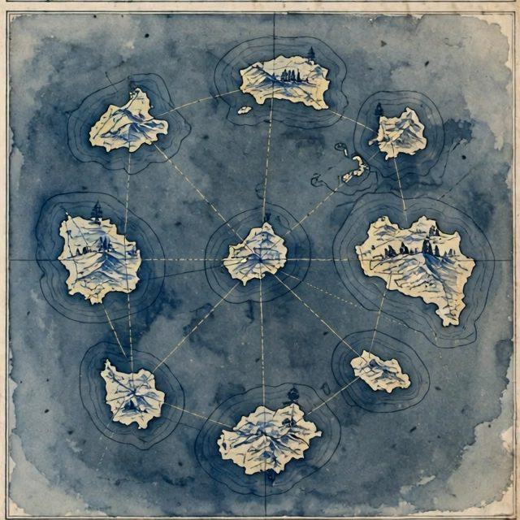
The Department's reply, written after a filing and carrying the payment details.
After a filing, the Department replies. The reply is addressed to the email given at the Registrar's Desk, and it confirms the number that the claim has reserved. It also carries the payment details, so that the citizen can complete the transaction in the order set out on this page.
The Department regards this as a human-scale transaction, conducted by letter. One person files. The Department reads the filing, enters the reservation, writes back, and, after payment, prepares a pack whose Permit is numbered by hand and sealed in gold. No part of the sequence is enlarged beyond the people and paper it requires.
A citizen who has filed and not yet heard back holds a reservation, not a silence to worry over. The reply is a step in the procedure, as filing was, and it comes from the same Desk.
97When the Hundred Are Gone
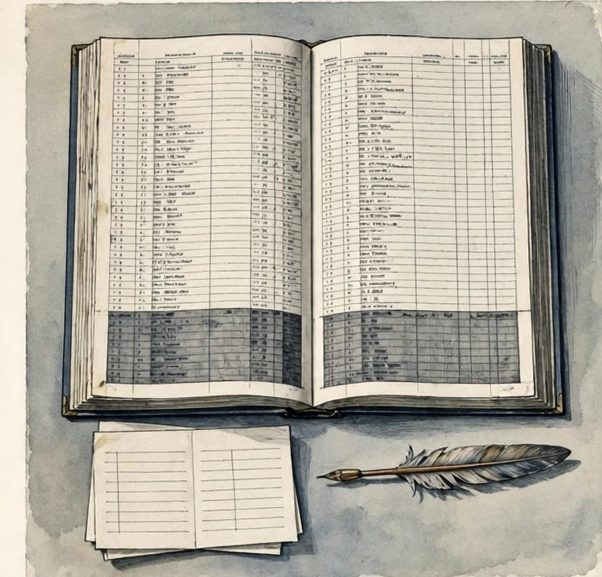
The hundredth filing recorded, and the first issue noted as complete in the Registry.
When the hundred are gone, the first issue is complete. Permit No. 100 will have been claimed, the hundredth name entered in the Registry of Plots, and the last line of the first page filled in the same ink as the first. The Department will note the fact in the book.
It will note it without drama. There is no ceremony for the closing of a module, just as there was none for its opening beyond the documents themselves. A line is drawn, in the clerical sense, and the record shows one hundred citizens, numbered in order of claim, each holding the same three sheets.
Readers who arrive afterwards have not arrived at a closed institution. They have arrived after a first issue, which is a different thing. What the Department offers them next is the subject of the following block.
98Module No. 2
Module No. 2, the successor issue, to be offered first to citizens of the first.
When the 100 are gone, the Department issues Module No. 2. It is the successor to the first issue, prepared under the same heading and kept in the same Registry. Its arrival is not an improvisation. It is the step the Department described from the beginning, to be taken when the first hundred are complete.
Citizens are offered every new module first. That is a standing term of the Citizen Card, and it applies here in its plain sense: the hundred citizens of the first issue will hear of Module No. 2, and be offered it, before it is offered more widely. Neighbours in the book are neighbours in the queue.
The shape of Module No. 2 is the Department's to announce, in its own time and on its own page. This block records only that it follows, that it is numbered as a second module, and that citizens come first.
99The First Page of Someone's Collection
Permit No. 001 after the first issue, standing as the first page of a collection.
After the first issue closes, Permit No. 001 changes its position without changing its contents. It remains a numbered Permit, sealed in gold, for Mare Tranquillitatis, Sector G, Plot 001. But once a Module No. 2 exists, No. 001 is no longer only the first Permit. It is the first page of someone's collection.
Collections, as the Department understands them, begin exactly this way. A first sheet is kept, a second is offered, and the citizen who holds the first is the citizen best placed to hold the series in order. The First Citizen, first in the Registry and first under the oath, holds that position by numbering alone.
The Department issues paper. What a citizen builds from the paper, sheet by sheet and module by module, is a collection, and collections belong to the people who keep them.
100The Second Drop, on Paper
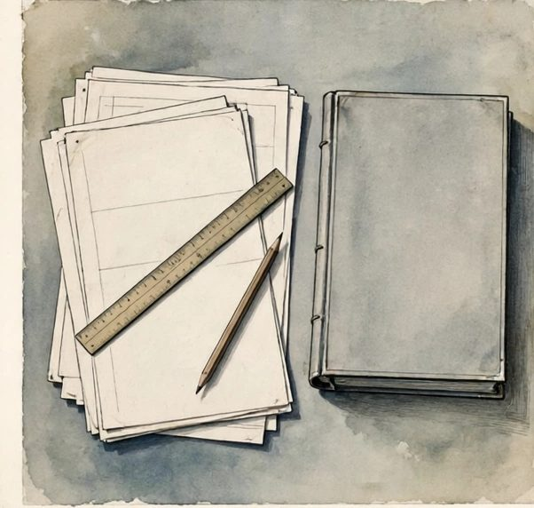
The second issue in draft, closing this hall of the Registry.
This hall closes where the next one begins: on paper. The Department is already drafting the second issue in the only form in which anything here has ever begun, as sheets, headings, ruled lines, and numbers waiting for names. Until it is announced, the draft is a draft, and the Department treats it as such.
Nothing in this hall depended on anything larger than paper. A permit, a map at Scale: 1 : Imagination, a citizen card, an oath, a certificate, and a registry together made an institution complete enough to file at, reply from, and collect. That was the intention, stated without enlargement from Block 81 onwards.
The reader who wishes to begin may file at the Registrar's Desk on this page. The reader who does not has still read the record in order, which is the other use the Department intends for it.
101Reporting for Duty Shortly
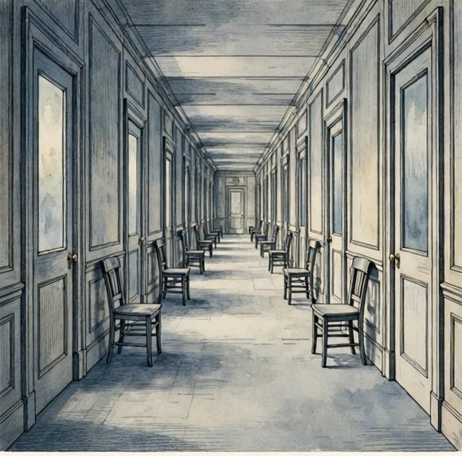
The corridor behind the Gravity office, where the other departments are expected in due course.
Gravity is the flagship of Hi-Tech Limited Holding, not the whole of it. Behind the Department of Lunar Construction there is a corridor, and along the corridor are other doors. Some are labelled. Some are merely measured for labels. The Holding does not apologise for this arrangement; it is how registries have always grown, one occupied room at a time.
The rest of the departments report for duty shortly. That is the official phrase, and shortly is doing honest work in it. No dates are issued from this desk, because a date printed in advance becomes a promise, and promises are filed, not improvised. When a department is ready, its door will open, its book will be laid out, and its first form will be numbered from one.
102The Lunar Line
The Holding's wider lunar work, conducted at other desks and concerning other seas.
The Lunar Line is the name given to the Holding's other lunar desks and landings. Gravity concerns itself with one plot, one permit, and one stretch of the Sea of Tranquillity. The Line is wider. It keeps an eye on the other seas, the other sectors, and the paperwork that accumulates wherever a map has been drawn carefully and left in good order.
Nothing on the Line is offered yet, and nothing here should be read as an offer. It is a direction of travel, recorded in advance so that citizens are not surprised later. When another desk opens, it will have its own form, its own register, and its own patient queue, in the same manner as this one.
103Selene Industrial
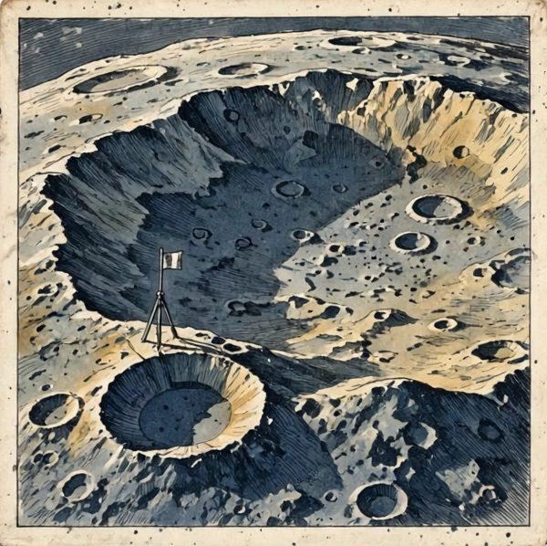
The Shackleton Crater concern, where industry is contemplated at the pole, in low sun.
Selene Industrial is the Holding's Shackleton Crater concern. It concerns itself, in principle, with industry at the lunar south pole: light that nearly never leaves the crater rims, ice that may or may not be waiting in the permanent shadow, and the long, slow business of making things where almost nothing has been made before.
It has not reported for duty yet. Its file is open, its name is entered, and its desk is reserved at the far end of the corridor, where the light is best. Until it reports, there is nothing to apply for and nothing to buy. The Department notes its existence the way a registry notes a birth in the family: formally, and without rushing it.
104The Lunar Mall, Archived with Honours
An earlier concept, kept in the archive, its papers in order and its name spoken with respect.
The Lunar Mall was an earlier concept of the Holding: commerce, imagined for a place with no shops, no shoppers, and no weather to shelter from. Its original site was lost in May 2026. The Department does not embroider that fact. Things are lost, including websites, and a registry that cannot admit a loss cannot be trusted with a record.
So the Mall is kept in the archive, with honours. Its drafts are retained, its name is not reused for anything lesser, and its place in the Holding's history is secure precisely because it is finished. Not every department reports for duty. Some report for the record, and the record is enough. A hall kept honestly in the archive serves the Holding better than a promise repeated in its place, and citizens consulting the older papers will find them dated, signed, and complete.
105LEAF, the Green Department
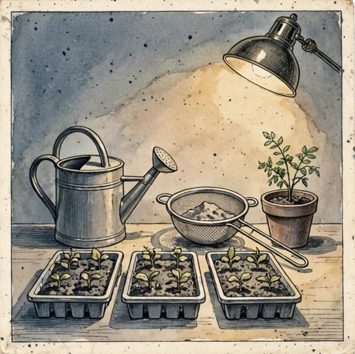
The Holding's green department: food, oxygen, and soil made from stone, green on paper first.
LEAF is the Holding's green department. Its remit is the quiet essentials: food, oxygen, and regolith turned patiently into soil. Before anything can be built on a plot in any lasting sense, something must be able to grow near it. LEAF attends to that order of things, and it does so, like everything else here, on paper first.
LEAF also keeps the park clause. Wherever the Holding plans, a portion is set aside to remain unbuilt and green in intention, a park before there is ground for one. Citizens who find that impractical are referred to the clause itself. It has been read many times. It has not been amended. When LEAF reports for duty, its first entries will be plantings, recorded by name and date, like everything else in the book.
106The Holding as Departments
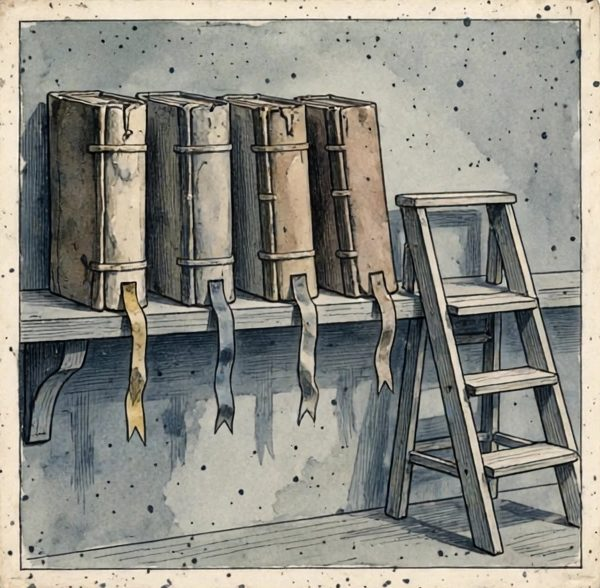
How the Holding grows: one department, one registry, and one document at a time.
The Holding grows by departments. It does not expand, diversify, or scale; those are words for other kinds of organisation. A department is opened when there is work that deserves its own book. The work is then entered in that book, by hand, in order, and the department answers for its entries and for nothing else.
This is slower than the alternatives, and the Department is aware of the alternatives. But a single registry that tried to hold everything would hold nothing well. One department, one registry, one document at a time: that is the whole method, and citizens who have read this far have already understood it better than most explanations manage. Each new department therefore begins with a blank book, not a borrowed one.
107Citizens Hear First
Every new department is announced to the Registry before it is announced to the world.
Every new department is announced to the Registry before it is announced to the world. This is not a marketing arrangement. It is a matter of order. The names in the book came first, in every sense that matters to this desk, so the news reaches them first as well. Citizens are offered new modules first, and they hear of new departments first, too.
No citizen is obliged to want any of it. A permit in Mare Tranquillitatis, Sector G, remains complete on its own, whether or not another door ever opens along the corridor. Hearing first is a courtesy of the Registry, not an obligation laid upon the citizen, and the book records refusals with the same care as acceptances.
108The Museum Keeps Growing
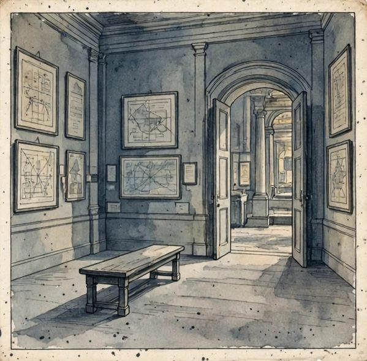
The estate of projects as a museum of working paper, in which Gravity is one hall among several.
Taken together, the Holding's projects form something like a museum of working paper. Each landing is a hall. Each hall is finished, lit, and open, whether or not many visitors pass through it on a given day. Gravity is one such hall: the one with the permits, the plot map, and the view of Mare Tranquillitatis that never changes and never needs to.
A museum does not apologise for a quiet Tuesday. The exhibits are kept in order, the labels are accurate, and the doors stand open at the stated hours. New halls are added when the work is ready, not before. Citizens of the Registry are, in this sense, already members of the museum, and their names are in the visitors' book permanently.
109FAQ — Is This Real Land?
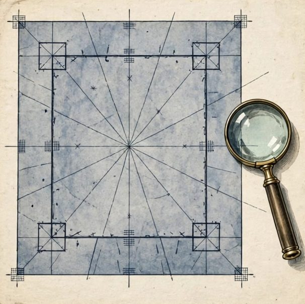
No; and the No is the honest foundation on which the whole Department stands.
No. The permit is not real land, and it conveys no real land. What a citizen holds is a work of speculative fiction and a collectible print: a numbered permit, a plot map, and a citizen card, made carefully and recorded in the Registry of Plots under Form HLH-G-001. The plot itself, Mare Tranquillitatis, Sector G, Plot 001, at 0.67 degrees north, 23.47 degrees east, remains exactly where it was, belonging to no one at this desk.
The Department regards this No as a foundation, not a drawback. An institution that begins by stating plainly what it cannot give can be believed about what it can: good paper, a fair register, and a place recorded against your name, kept in order indefinitely.
110FAQ — Is the Permit Valid Anywhere?
Valid exactly where paper is honoured: in the Registry, in the collection, and in writing.
The permit is valid exactly where paper is honoured. It is valid in the Registry, where its number is entered against its citizen's name. It is valid in the collection, where it keeps company with its map and card. It is valid in the imagination, which has recognised far stranger documents, and it is valid in writing, which is the jurisdiction this Department has always claimed and the only one it claims.
It is not valid as title, tenure, or authority anywhere else, and the Department will not pretend otherwise to neighbours, officials, or fellow citizens. A certificate carried honestly within its stated limits may be carried for a lifetime. One carried beyond them tends to embarrass everyone at the border.
111FAQ — Can I Visit My Plot?
Not yet, and no transport is sold; the visit currently available is the map.
Not yet. No transport to the Moon is offered by the Holding, implied by the permit, or included in the pack at any price. Anyone who suggests otherwise to a citizen is not speaking for this Department, and the Registrar would like to know about it through the Registrar's Desk, in writing, at the citizen's convenience.
The visit currently available is the map. This is less of a joke than it sounds. For most of human history, most owners of distant plots knew them exactly this way: by chart, by coordinates, and by description. Sit with the Plot Map. Learn where Plot 001 sits in Sector G. That familiarity, recorded and revisited, is the visit the Department can honestly provide today.
112FAQ — Can I Build Yet?
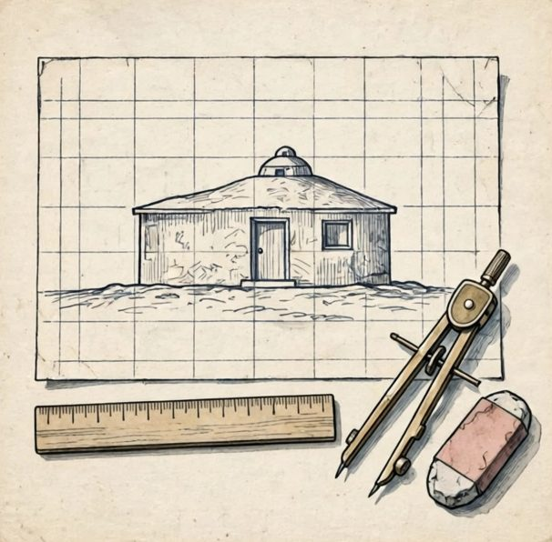
Construction is permission to imagine, in writing; a good drawing counts as a structure.
Not in masonry, regolith, or anything that would trouble an engineer. Construction, under the permit, is permission to imagine, in writing. The building season is open on paper and closed, for the present, at the surface of the Moon. Citizens are asked not to dispatch materials. There is no depot, and the Department accepts no deliveries on a citizen's behalf.
Under condition three, a good drawing counts as a structure. Draw the house, the workshop, the observatory, or the wall you would build around Plot 001, and draw it well. A structure recorded in this way may be amended, extended, or demolished with a pencil, which experienced builders will recognise as a considerable advantage over the usual arrangements, and a far cheaper one.
113FAQ — Why Paper?
Because paper is the technology that has carried every registry humanity ever kept.
Because paper is the technology that has carried every registry humanity ever kept. Births, marriages, deeds, treaties, and the first maps of the Moon itself all travelled on it. Paper asks for no updates, accepts no remote alterations, and cannot be switched off by a provider whose terms have changed in the night. It simply remains, which is the first duty of a record.
Paper also ages honestly. A permit sealed in gold and numbered by hand will look, in fifty years, like a document that has been kept, because it will have been. The Department chose its materials the way it chose its words: for keeping. Citizens are advised to store the pack flat, dry, and somewhere it will be found by the right person.
114FAQ — If I Lose My Permit
The Registry keeps your name and number; a lost permit is a Registry matter, not an ending.
A lost permit is a Registry matter, and Registry matters have procedures. The Registry keeps the citizen's name and number independently of the document itself, so Permit No. 001 remains Permit No. 001 even if the paper that carried it has gone astray in a move, a flood, or the ordinary entropy of a household. The book remembers what the drawer cannot.
To set it right, write to the Registrar's Desk using the form on this page and ask for a Registry correction. State the name under which the permit was granted, as exactly as it can be stated. The Desk will consult the book, confirm the entry, and advise on the correction. No citizen has ever been struck off for losing a piece of paper.
115FAQ — Can a Permit Be Transferred?
By Registry correction, filed and recorded; the book decides, not the marketplace.
Yes, by Registry correction, and only by Registry correction. A transfer is filed at the Registrar's Desk, examined against the book, and recorded as an entry in the Registry of Plots. Until that entry is made, no transfer has occurred, whatever may have been agreed elsewhere between the parties, however amicably, and however fine the handwriting.
The book decides, not the marketplace. The Department keeps no exchange, quotes no values, and takes no view on what a permit may be worth between a willing giver and a willing receiver. Its interest begins and ends with the record: the right name, against the right number, in the right order, so that the next citizen who consults the book finds it true.
116The Honesty Line
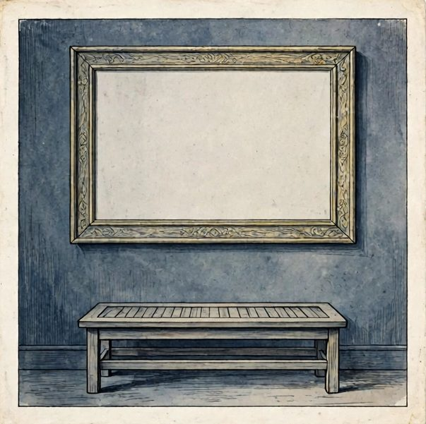
The fine print, promoted to a full block, where it can be read at a comfortable size.
Most institutions print their most important sentence smallest. The Department has chosen the other arrangement. Here it is, at full size, where it belongs: A work of speculative fiction and collectible print. This permit grants no real property, no jurisdiction, and no rights on the Moon — the Moon belongs to everyone, which is precisely why the paperwork matters.
That sentence governs everything on this page and everything in the pack. It was not added by a lawyer, a regulator, or a disappointed citizen. It was written by the Department itself, at the beginning, and placed at the end so that it is the last qualification a reader meets before the closing entry. It stands here without apology, and it will not be moved.
117The Moon Belongs to Everyone
Therefore no one can sell it to you, and this Department does not pretend to.
The Moon belongs to everyone. That is not a sentiment the Department decorates its documents with; it is the legal and moral weather in which the whole Registry operates. Because the Moon belongs to everyone, no one can sell it to you. Not this Holding, not any other registry, and not a man with a very convincing telescope and a laminated certificate of his own invention.
What the Department sells is the paperwork of belonging. That distinction is the entire business, stated plainly. A citizen does not acquire the Moon. A citizen acquires a numbered place in a kept record about the Moon: a permit, a map, and a card, made to last. For many citizens, on reflection, that was the part they wanted all along.
118Why the Paperwork Matters
Because attention, recorded, is how humans have always made a place theirs.
Attention, recorded, is how humans have always made a place theirs before they could stand on it. Explorers named capes they had only seen through glass. Registrars entered plots in ledgers for towns that were still lines on a survey. The record came first, and the standing on it, when it came at all, came later and stood on the record's shoulders.
The paperwork matters because it is the part that can be done properly, now. Coordinates can be stated exactly. A name can be entered fairly. A number can be issued once and never reused. None of that requires a rocket. It requires a desk, a book, and the patience to keep both in order, which is what citizens are actually trusting when they trust the Department.
119A Note from the Registrar
From the Registrar's own hand: the desk is open, the book is open, and the queue is fair.
I keep this Registry. I numbered the first permit by hand, and I will number the rest the same way, because a hand slows the work to the speed at which mistakes can be caught. If you write to the Desk, your letter is read by a person doing this job on purpose. Replies take as long as accuracy takes, and not one entry longer.
The desk is open. The book is open, to the extent a book of other people's names can properly be open. The queue is fair: first filed, first entered, no exceptions sold at any window. Citizens with questions not answered above are welcome at the Desk. Citizens with corrections are especially welcome. A registry improves the way a map does, by being corrected.
Those who wish to record the citizen's side of the matter may also visit the Oath certificate page, where the wording is kept. It is not required. Nothing here is required beyond honesty, which the Department supplies from its side and requests, politely, from yours.
120Granted, Provisionally, Forever
The status line, one last time; the page ends the way the permit begins.
The status of the permit is entered on its face, and it is entered here again so that the page and the document agree: Granted, provisionally, forever. Provisional, because everything human is, and because the Department will not claim a certainty it does not possess about a world it has not visited. Forever, because the Registry does not revoke what it has fairly granted, and the book, once written, is kept.
That is the whole of it. One permit, one plot, one name in the book, in Mare Tranquillitatis, Sector G, at 0.67 degrees north, 23.47 degrees east. The pack is twenty dollars. The record is permanent. The Moon, as ever, belongs to everyone. The page ends here, the way the permit begins.